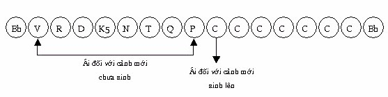
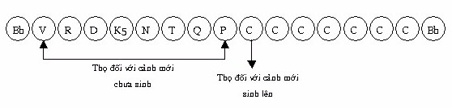

|
Luận
giải Kinh Chánh Tri Kiến Tỳ khưu Chánh Minh
Tiêu đề 7- Trí hiểu rõ về Thủ (upādāna). Chánh kinh. “Chư Hiền, thế nào là thủ, thế nào là tập khởi của thủ, thế nào là sự đoạn diệt của thủ, thế nào là con đường đưa đến đoạn diệt của thủ?. Chư Hiền, có bốn thủ (cattāro’ me āvuso upādāna): Dục thủ (kāmupādānaṃ), Kiến thủ (diṭṭhūpādānaṃ), Giới cấm thủ (sīlabbatupādānaṃ), Ngã luận thủ (attavādupādāna). Từ tập khởi của ái có tập khởi của thủ, từ đoạn diệt của ái, có đoạn diệt của thủ, và Thánh đạo tám ngành là con đường đưa đến đoạn diệt của thủ”. Giải. 1- Ý nghĩa từ upādāna (thủ). Upādāna = upa (vững chắc, rất mạnh) + ādāna. Ādāna = ā + căn dā (cho): ādāna là bám níu lấy, nắm giữ vững chắc. Nắm giữ chắc chắn, gọi là thủ. Thủ là hình ảnh của ái (taṅhā) rất cường mạnh. Luận sư Anuruddha có ví dụ như sau: “Ái như tên trộm rình mò trong bóng tối để trộm vật, còn Thủ là hành động lấy vật ấy” [1]. Thủ là sự chấp cứng không chịu buông bỏ, ví như con trăn xiết chặt con mồi hay ví như dây leo māluvā bám chặt vào thân cây [2]. Các Ngài có giải thích upādāna (thủ) như sau: “Bhusaṃ ādiyanti amuñcagātaṃ gayhaṃtīti upādānāni: Bám chắc không buông bỏ, gọi là thủ”. Hay: “Upādiyantīti = upadānāni: bám cứng gọi là thủ”. Đức Phật có dạy: “Tattha chandarāgo taṃ tattha upādānan’ti. “Chỗ nào có tham và dục (chanda), chỗ ấy có chấp thủ.”[3] Trước tiên cần phân biệt: “Pháp nắm giữ” và “pháp bị nắm giữ”. Pháp nắm giữ là dục (chanda) và tham (lobha). Pháp bị nắm giữ là năm uẩn. Katame ca, bhikkhave, upādāniyā dhammā. Katamaṃ upādānaṃ? Này các Tỳkhưu, thế nào là pháp bị nắm giữ? Thế nào là nắm giữ?. Rūpaṃ, bhikkhave upādāniyo dhammo, yo tattha chandarāgo, taṃ tattha upādānaṃ. Vedanā .... saññā... saṅkhārā... Viññāṇaṃ upādāniyo dhammo, yo tattha chandarāgo, taṃ tattha upādānaṃ. - Sắc, này các Tỳkhưu, là pháp bị nắm giữ. Dục và tham đối với sắc, là nắm giữ sắc. Thọ... tưởng... hành.... Thức, này các Tỳkhưu là pháp bị nắm giữ. Dục và tham đối với thức là sự nắm giữ thức.[4] Chính vì “nắm giữ năm uẩn” nên có sự khổ luân hồi. Theo thực tính pháp thì Thủ có bốn khía cạnh: -Trạng thái: Chấp cứng (bám cứng) (gahaṇalakkhanaṃ). - Phận sự: Không buông ra (amuñcanarasaṃ). - Thành tựu: (làm cho) ái (với) tà kiến trở nên cường mạnh (taṇhāpedaḷhattadiṭṭhi paccupaṭṭhānaṃ). - Nhân cần thiết: Có ái (taṇhāpedaṭṭhānaṃ). Thủ có bốn là: Dục thủ, Kiến thủ, Giới cấm thủ và Ngã luận thủ. 2-Dục thủ (kāmupādāna). Dục thủ là “nắm giữ vững chắc sáu trần cảnh: sắc, thinh, hương, vị, xúc và pháp trần”. Chi pháp của dục thủ là tâm sở tham (lobha cetasika), đối tượng nắm giữ là sáu trần cảnh. a. Sắc dục thủ (rūpakāmupādāna). Sắc ở đây chỉ cho hình tướng, đường nét, màu sắc ... của những gì lọt vào vùng cai quản của thần kinh nhãn. Sắc dục thủ là nhiễm đắm trong các màu sắc, hình tướng hay các đường nét ấy. Có một số người thích thú sâu nặng một màu sắc nào đó, một hình tướng khả ái nào đó, hoặc chỉ muốn riêng mình có những hình tướng khả ái, thích ý nào đó... Đây là sắc dục thủ. Sắc khả ái này rất đa dạng, có thể tìm thấy khắp nơi, có trong người nữ, người nam hay trong các vật dụng. “Nāhaṃ bhikkhave, aññaṃ ekarūpampi samanupassāmi yaṃ evaṃ purisassa cittaṃ pariyādāya tiṭṭhati yathayidaṃ itthirūpaṃ. “Này chư Tỳkhưu, ta không thấy một sắc nào khác xâm chiếm và ngự trị tâm (cittaṃ pariyādāya tiṭṭhati) người nam, như sắc người nữ...” “Nāhaṃ bhikkhave, aññaṃ ekarūpampi samanupassāmi yaṃ evaṃ itthiyā cittaṃ pariyādāya tiṭṭhati yathayidaṃ purisarūpaṃ. “Này chư Tỳkhưu, ta không thấy một sắc nào khác xâm chiếm và ngự trị tâm người nữ, như sắc người nam[5]. Có một số người chỉ thích dùng một loại vật dụng, không phải vì có nhiều công dụng hơn vật khác, mà chỉ vì nó có màu sắc hợp với ý của y. Nên ghi nhận rằng: “Một khi đã nắm giữ vững chắc màu sắc hay hình tướng của vật nào đó, xem như nắm giữ cả khối có màu sắc hay có hình tướng ấy và không muốn lìa bỏ vật ấy”. Như một người nam chỉ đắm nhiễm trong sắc khả ái nào đó của người nữ (như mắt, mũi, răng...), thế là y muốn nắm giữ cả (khối) nữ nhân ấy. b. Thinh dục thủ (saddakāmupādāna). Là nhiễm đắm chấp cứng theo các loại âm thanh. Âm thanh khiến tâm rơi vào đắm nhiễm có thể là tiếng chim, tiếng người, tiếng sáo, tiếng đàn... Có một số người thích nghe chim hót và xem như một nhu cầu trong cuộc sống không thể thiếu được. Một số người khác lại đắm nhiễm trong tiếng đàn, tiếng hát, tiếng sáo... đối với họ những âm thanh này là một nhu cầu trong cuộc sống, thiếu vắng nó đời sống của họ trở nên vô vị, trống vắng. Và đối với những âm thanh làm cho tâm đắm nhiễm nhiều nhất là tiếng ca, ngâm vịnh, nên Đức Phật có dạy: “Ruṇṇamidaṃ bhikkhave, ariyassa vinaye yadidaṃ gītaṃ. “Này các Tỳkhưu, ca vịnh (gītaṃ) được xem là khóc than (ruṇṇaṃ) trong giới luật bậc Thánh ”[6]. Tương tự như sắc dục thủ, khi có thinh dục thủ thì không phải chỉ riêng âm thanh ấy đáng quyến rũ, mà là toàn thể khối phát ra âm thanh ấy đều đáng ưa thích (đối với người ấy). Và chúng ta thấy rõ: “Một người yêu tiếng hát một nam hay nữ ca sĩ, họ yêu toàn thể vật dụng của người ấy dùng, luôn cả điệu bộ lẫn con người ấy”. c- Hương dục thủ (gaṇthakāmupāda). Là nhiễm đắm, dính cứng trong các mùi. Mùi cũng là một chi phần dẫn đến dục thủ, ở đây chỉ cho tất cả hương thơm. d. Vị dục thủ (rasakāmupāda). Là dính mắc khắn khít trong các vị chất. Thông thường những vị chất ngon ngọt, làm tâm đắm nhiễm, tuy nhiên điều này chỉ có tính tương đối, một số người thích vị cay (như ăn cơm phải có ớt), vị đắng (như người uống café không đường) ... Ngài Mahasī Sayadaw cho rằng: Dục thủ sinh từ vị ngon có vẻ hình thức hơn là thực chất, thích thú trong ẩm thực không phải do vị chất là chính yếu, mà do cách bày biện, sữa soạn chế biến của người thực hiện. Một số người chồng thích ăn những món do vợ nấu, dù tài làm bếp của nàng chẳng có chi đáng kể, thậm chí thua xa người khác [7]. e- Xúc dục thủ (phoṭṭhabbakāmupāda). Là nhiễm đắm khắn khít vào sự đụng chạm, vuốt ve... f- Pháp dục thủ (dhammakāmupāda). Là nhiễm đắm, không muốn buông bỏ những pháp khả ái, an lạc, có liên hệ đến dục (kāma) hoặc liên hệ đến thế gian (loka), như những pháp an lạc trong thiền chẳng hạn. “No cedaṃ, bhikkhave, loke assādo abhavissa, nayidaṃ sattā loke sārajjeyyuṃ. “Này các Tỳkhưu, nếu không có vị ngọt ở đời, thời các loài hữu tình không có tham nhiễm đối với đời (sārajjeyyuṃ)”[8]. Cái gì là vị ngọt? “Yaṃ kho pathavīdhātuṃ paṭicca upajjati sukhaṃ somanassaṃ, ayaṃ pathavīdhātuyā assādo. “Lạc hỷ gì khởi lên do duyên địa giới, đó là vị ngọt của địa giới”[9]. Địa giới ở đây ám chỉ ấn tướng đề mục đất. Như vậy, nắm giữ không buông bỏ những hỷ lạc trong pháp (nào đó), gọi là pháp dục thủ. Có câu hỏi: Tái sinh về Phạm thiên giới do thủ (upādāna) nào? Do pháp dục thủ. Vị hành giả chứng đắc Sơ thiền, không còn dính mắc trong năm trần cảnh: sắc, thinh, hương, vị, xúc nhưng pháp dục thủ vẫn còn. Dục thủ (kāmupādāna) duyên cho hữu. Với kẻ phàm phu không nghe được pháp bậc Thánh, không thực hành theo pháp bậc Thánh, nên không có sự suy xét các pháp theo lý nhân quả. Tâm của kẻ phàm phu này chạy theo dục lạc, chính vì say đắm trong dục lạc nên họ hăng hái dấn thân vào ác bất thiện pháp như sát sanh, trộm cắp, ... để phục vụ cho mục tiêu hưởng lạc, khi mệnh chung phải sinh vào bốn khổ cảnh. Đây là trường hợp dục thủ làm duyên cho nghiệp hữu và sinh hữu ở bốn khổ cảnh. Một số chúng sinh khác muốn thụ hưởng dục lạc một cách chân chánh, nên tạo việc phước rồi ước nguyện thụ hưởng dục lạc thế gian. Đa số hàng Phật tử đều rơi vào loại dục thủ này, khi tạo thiện nghiệp như bố thí, trì giới ... luôn mong ước được thụ hưởng dục lạc trong thế gian. Trong Luật Đại phẩm (Mahāvagga) có ghi mẫu chuyện tiền thân của trưởng giả Mendaka, tóm lược như vầy: Tiền nghiệp của Trưởng giả Mendaka. Trong quá khứ, có vị trưởng giả được một chiêm tinh gia cho biết sẽ có hạn hán, ông tích trữ lương thực để phòng đói. Khi hạn hán khởi lên, ông đem thóc lúa tích trữ ra cứu đói, nhưng hạn hán kéo dài đến ba năm, nên số lương thực tích trữ dần dần cạn kiệt, ông cho giải tán gia nhân chỉ giữ lại người cày ruộng Puṇṇa. Gia đình ông bấy giờ chỉ còn năm người: ông, vợ ông, con trai, dâu và người cày ruộng Puṇṇa. Thế rồi, gia đình ông chỉ còn một nhúm thóc cuối cùng đủ nấu nồi cháo nhỏ, mỗi người chỉ được một chén. Vị trưởng giả chợt thấy vị Samôn (Đức Phật Độc Giác) đang đứng trước cửa nhà khất thực, trưởng giả suy nghĩ: “Do kiếp trước ta thiếu bố thí, nên nay phải gặp nạn đói, ta hãy tạo phước, nhờ phước này ta sẽ không còn sợ đói trong tương lai”. Ông cúng dường phần cháo của mình đến Đức Độc Giác, rồi nguyện rằng: “Xin cho tôi có được lúa gạo sung mãn theo như ý và được sống chung cùng những người nhà như trong hiện tại vào những kiếp sau sau”. Người vợ suy nghĩ: “Chồng ta cúng dường phần cháo của mình rồi, chẳng lẽ ta dùng cháo trong khi chồng ta nhịn đói, thôi thì ta hãy cúng dường phần cháo của mình đến vị Samôn luôn thể”. Và bà cúng dường phần cháo của mình đến Đức Độc Gác, rồi phát nguyện: “Xin cho tôi khi múc vật thực, vật thực không bao giờ cạn, và được đoàn tự gia đình như hiện tại trong những kiếp sau sau”. Cậu con trai suy nghĩ: “Chẳng lẽ ta dùng cháo, trong khi cha mẹ ta đang đói, ta hãy cúng dường phần của ta đến vị Samôn luôn thể”. Rồi cậu cúng dường phần cháo của mình, ước nguyện: “Xin cho túi tiền vàng của tôi không bao giờ cạn, cho dù tôi có cho đến bao nhiêu người, túi tiền vàng vẫn như cũ. Và tôi được đoàn tụ với những người trong thân tộc như hiện nay trong những kiếp lai sinh”. Người con dâu, cũng làm theo như chồng và ước nguyện như chồng. Người hầu Puṇṇa, cũng suy nghĩ: “Chẳng lẽ ta dùng cháo, trong khi những người chủ của ta lại nhịn đói”. Ông cũng cúng dường phần cháo của mình, rồi ước nguyện: “Xin cho tôi cày một đường (cày) thành bảy đường và được làm gia nhân cho gia đình này như trong hiện tại”. Những ước nguyện trên cho chúng ta hiểu ý nghĩa của dục thủ, nhất là nguyện được đoàn tụ trong những kiếp lai sinh xuất phát từ “nắm giữ cái của tôi” quá mạnh, thậm chí người hầu Punna chẳng ước nguyện chi khác ngoài “cày một đường thành 7 đường cày” và “được làm nô lệ cho gia đình người”, lời nguyện này hẳn phải có vô minh trợ giúp. Và ái càng mạnh thì vô minh càng dày. Có thể người hầu Punna không tin “lời ước thành sự thật”, nên ông ước cho vui lòng chủ. Nên lưu ý: Khi tạo phước mà “không tin có quả báo” thì đúng là vô minh dày, đồng thời sẽ dẫn đến tà kiến “không tin có nhân quả, không tin có nghiệp báo”. Mong muốn hưởng dục lạc luôn xuất phát từ tham ái, một khi tham ái tăng thịnh thì sự hưởng thụ dục lạc không hề biết đủ, nó như kẻ khát lại uống nhầm nước mặn, càng uống nước càng thấy khát. Đức vua Mandhātu hưởng dục lạc nhân loại trong một thời gian dài chưa cảm thấy thỏa mãn, đến cõi Tứ đại vương hưởng dục lạc trong một thời gian dài, vẫn chưa thỏa mãn, lại đến cõi Đạo Lợi, được vua trời Đế Thích chia cho nửa cõi trời Đạo Lợi (Tāvatiṃsa). Đức vua hưởng thiên lạc suốt cả 36 đời vua trời Đế Thích (mỗi đời vua trời Đế Thích là 36 triệu năm tính theo nhân loại) vẫn chưa hài lòng, lại khởi tâm muốn giết chết vua trời thứ 37 để chiếm đoạt trọn vẹn cung trời Đạo Lợi. Đến đây, phước của vua Mandhātu đã cạn, phải trở về nhân loại, xuất gia rồi mệnh chung sau 7 ngày. “Na kahapaṇa vassena. Titti kāmesu vijjati... “Dầu mưa bằng tiền vàng. Các dục khó thỏa mãn...” [10] Nên ghi nhận rằng: “Ước nguyện giải thoát khỏi sinh tử luân hồi” không phải là dục thủ, vì cảnh giới Nípbàn không có sắc, thinh, hương, vị, xúc, pháp để thụ hưởng. Không nên hiểu lầm kệ ngôn: “Nibbānaṃ paramaṃ sukhaṃ: Nípbàn là lạc tối thượng”[11]., cho rằng Nípbàn có thọ uẩn để thụ hưởng an lạc. Đức XáLợiPhất có giải thích: “Tái sanh là khổ, không tái sanh là lạc”[12]. Không có tái sinh thì không có uẩn, không có uẩn nghĩa là không có thọ (vedanā), không có thọ thì không có thụ hưởng. Chính vì không có uẩn (hữu vi pháp) nên không có “sinh diệt”, không có sinh diệt là “lạc tối thượng”. Không có uẩn nên không có tính thụ hưởng, nên ước nguyện Nípbàn không là dục thủ. Dục thủ khiến chúng sinh “tình nguyện làm nô lệ cho dục ái”. Như lời Ngài Ratthapāla: “Ūno loko atitto taṅhādāso ti’kho: Thế gian thiếu thốn, khao khát, là nô lệ cho tham ái.” [13] Chính nhờ những nghiệp thiện như bố thí, trì giới, tu thiền, cung kỉnh, phục vụ ... Sau khi mệnh chung, được tái sinh về cảnh giới người hay chư thiên. Đây là dục thủ làm duyên cho dục hữu tốt. Một số chúng sinh khác muốn thụ hưởng thiền lạc (jhānasaddhaṃ) hay muốn được sanh về cõi Phạm thiên, cố gắng tu tập chứng đạt thiền Sắc giới hay Vô sắc giới, mệnh chung được sanh về cõi thiền đã chứng đắc. Đây là dục hữu làm duyên cho Sắc hữu hay Vô sắc hữu. 3- Kiến thủ (diṭṭhupādāna). Cả ba loại thủ còn lại, đều có chi pháp là tâm sở tà kiến, nhưng có những điểm khác biệt nhau, ví như cội cây có ba nhánh. Kiến thủ lấy “thế gian (loka)” làm đối tượng. Ngã luận thủ là lấy “cái ta (atta)” làm đối tượng. Giới cấm thủ lấy “những cách thực hành sái quấy” làm đối tượng, đồng thời giới cấm thủ còn hàm ý “bám vào những điều mê tín, dị đoan”. Nói cách khác, kiến thủ bám lấy thế gian, ngã luận thủ bám lấy cái ta, giới cấm thủ bám lấy nghi thức cúng tế sái quấy. a- Thế nào là kiến thủ? Trước tiên là kiến (diṭṭhi), sách Paṭisambhidā magga (Vô ngại giải đạo) có giải thích: “Tà kiến là gì? Là thấy sai, hiểu sai ”[14] Chữ diṭṭhi từ ngữ căn dis nghĩa là thấy, diṭṭhi thường được hiểu là “quan điểm, ý kiến, chủ thuyết”. Diṭthi khi đi kèm với tỉnh từ sammā (sammādiṭṭhi) là “hiểu biết đúng, quan điểm đúng”, khi đi kèm với tỉnh tử micchā (micchādiṭṭhi) hay đơn độc (diṭṭhi) là: “hiểu biết sai, quan điểm sai”. Kiến thủ là bám chắc vào một lý thuyết sai, hoặc nắm giữ một quan điểm sai. Kiến thủ nói gọn là: bám chắc vào quan điểm “thường hằng (sassata)” hay bám chắc vào quan điểm “đoạn diệt (uccheda)”. “Dvīhi, bhikkhave, diṭṭhigatehi pariyuṭṭhitā devamanussā olīyanti eke, atidhāvanti eke... “Này các Tỳkhưu, chư thiên và loài người bị xâm chiếm (pariyuṭṭhitā) bởi hai tà kiến”, một số chấp chặt (olīyanti), một số đi quá trớn (atidhāvanti).... [15]. Và Đức Thế Tôn có giải thích: “Người chấp chặt là chấp có (thường kiến)”, “người đi quá trớn là chấp không (đoạn kiến)”. Thường kiến (sassatadiṭṭhi) là cho rằng: “Có một tự ngã thường hằng bất biến, không bao giờ bị hoại diệt”. Đoạn kiến (ucchedadiṭṭhi) là cho rằng: “Có một tự ngã sau khi chết thì diệt mất”. Cho là “thường hằng” hay “diệt mất” đều là tà kiến, vì sao?. Vì đó là “quan niệm có một thực thể”, thực thể này không hề bị tiêu hoại, nên gọi là thường kiến, hoặc thực thể đó bị tiêu hoại không còn dư sót, nên gọi là đoạn kiến”. Thực ra chẳng có một thực thể nào cả, những gì đang hiện bày chỉ là kết quả của nhân duyên, khi nhân duyên hội hợp pháp ấy hình thành, nên gọi là hữu vi (saṅkhāra), ví như dùi trống chạm vào mặt trống, tiếng trống phát sinh lên, tiếng trống không hề có sẵn trong dùi trống hay trong mặt trống. Đức Nāgasena (Na Tiên) có giải đáp cho vua Milinda rằng: “Tâu Đại vương! Pháp hữu vi đã có rồi sanh trưởng kế tiếp, có ý nghĩa như vầy: Trong khi nhãn quan (con mắt) và sắc trần gặp gỡ, phối hợp nhau là nhân phát sinh nhãn thức, khi nhãn thức có thì nhãn xúc sinh lên, có xúc thì thọ sinh lên, có thọ thì ái sinh lên, có ái thì thủ sinh lên...”[16]. Lời dạy trên của Ngài Nāgasena “nhãn thức” không có sẵn, nhãn thức sinh lên do có nhân có duyên. Tương tự như thế với xúc, thọ, ái, thủ. Và: “Tâu Đại vương! Các pháp hữu vi không từng có, sẽ phát sinh lên”[17]. Những thành tựu của khoa học ngày nay đã chứng minh lời dạy này chuẩn xác. Một số thành tựu khoa học trước đây không có, nay có. Mở rộng quan điểm đoạn kiến thì: Có ba loại tà kiến cố định (niyatadiṭthi) về đoạn diệt, đó là: Vô hữu kiến (natthikadiṭthi), vô nhân kiến (ahetudiṭthi) và vô hành kiến (akiriyadiṭthi). Ba loại định kiến đoạn diệt này, là nguy hiểm nhất. - Gọi là vô hữu kiến vì cho rằng “tội hay phước đều không có”. Mẫu truyện trên đây minh họa cho loại tà kiến này . Nguyên soái Alata. Thuở xưa, tại kinh thành Mithilā xứ Videha do đức vua Aṅgati trị vì, vị nguyên soái của Đức vua là Alata. Một hôm Alata đưa đức vua đến gặp thầy mình là du sĩ lỏa thể Guna kassapa, Đức vua hỏi du sĩ Guna kassapa: “Làm thế nào để được sinh về thiên giới?”. Du sĩ Guna kassapa trả lời rằng: “Cần gì phải bận tâm đến điều đó, bởi tất cả những gì người ta gọi là thiện hay ác, chẳng qua là hư ngữ, dù làm lành hay ác cũng chẳng có quả dị thục (đây là vô hành kiến, lẫn vô hữu kiến – Ns). Bất luận là kẻ ngu hay người trí, sau 84 đại kiếp sinh tử luân hồi rồi tự nhiên mọi người sẽ được thanh tịnh và Nípbàn như nhau cả (đây là vô nhân kiến – Ns). Nghe đến đây, nguyên soái Alata đồng ý, vì ông nhớ lại được kiếp trước “mình là đồ tể giết trâu bò, có tên là Pingala [18]. Gả đồ tể này phạm biết bao tội lỗi, giết hại biết bao trâu bò”, nay sanh làm nguyên soái Alata. Bấy giờ có người nô lệ tên là Bījaka cũng đến nghe du sĩ Guna giảng pháp, nghe vậy ông bật khóc nức nở, khi Đức vua hỏi vì sao ông khóc? Ông trả lời: “Ông cũng nhớ lại được kiếp trước, kiếp trước ông là phú thương trong thành Sāketa, tạo nhiều phước lành. Nhưng nay phải làm người nô lệ”. Thật ra, cả nguyên soái Alata và nô lệ Bījaka chỉ nhớ được 1 kiếp quá khứ. Nếu nguyên soái Alata nhớ nhiều hơn ông sẽ thấy: “Trong một kiếp (trước kiếp ông làm đồ tể), ông sinh vào thời có giáo pháp Đức Phật Kassapa (Cadiếp), ông cúng dường, đảnh lễ Bảo tháp thờ Xálợi của Phật Kassapa, kiếp kế tiếp ông là gã đồ tể. Phước trong kiếp cúng dường, đảnh lễ bảo tháp Xálợi trả quả, nên nay được làm nguyên soái, còn nghiệp làm đồ tể chưa kịp trả quả”. Nếu nô lệ Bījaka nhớ được nhiều hơn, ông sẽ nhớ là: “Cũng trong thời có giáo pháp Đức Phật Kassapa, ông là người chăn bò. Một hôm, đàn bò của y đi lạc, y vào rừng tìm bò. Có vị Tỳkhưu bị lạc trong rừng, hỏi thăm đường ra khỏi rừng, y bực mình gắt gỏng: “Người gì ngay cả đường xá cũng không biết, thế này thì chỉ có nước làm đày tớ cho người mà thôi”. Kiếp sau đó , ông là người phú thương. Do quả của nghiệp mắng vị Tỳkhưu đang trả quả, nên ông phải làm nô lệ, còn nghiệp thiện khi làm phú thương thì chưa kịp trả.[19] Nguyên nhân có loại tà kiến này là: “Có một số Sa môn, Bàlamôn có thắng trí thấy chúng sinh làm ác, khi mệnh chung được sanh về thiên giới, có những chúng sinh làm thiện, khi mệnh chung phải sinh về bốn khổ cảnh”[20]. Nên đi đến kết luận vô hữu hoặc vô hành Trong thời Đức Phật, giáo chủ Makkhali Gosāla chủ trương thuyết vô hữu kiến này, và Đức Thế Tôn nghiêm khắc bác bỏ.[21] - Gọi là vô nhân kiến. Là cho rằng “chúng sinh tự nhiên sinh lên không do nguyên nhân nào cả, hay sự việc khởi lên chỉ là ngẫu nhiên”. Thật ra, mọi sự xẩy ra đều có nhân duyên không phải ngẫu nhiên mà có. Sở dĩ có quan niệm này là do “các Samôn, Bàlamôn có thắng trí túc mạng minh, nhớ lại được những kiếp sống quá khứ. Nhưng khi nhớ đến kiếp làm người Vô tưởng thì không nhớ được nữa, thấy rằng “trước đó không có, rồi xuất hiện mình”, nên cho rằng “chúng sinh ngẫu nhiên sinh ra” [22]. - Gọi là vô hành kiến. Là cho rằng “những hành động ác hay thiện đều không phải ác hay là thiện chi cả”. Theo kinh Samôn quả (sāmaññaphala sutta) trong Trường Bộ, đây là chủ thuyết của Pūraṇa Kassapa trong thời Đức Phật. Ba loại tà kiến này sở dĩ nguy hiễm vì “bác bỏ nhân quả và nghiệp báo”. Trong kinh Trung Bộ, Đức Phật có dạy: “Iti kho so Vaccha ekanavuto kappo yaṃ ahaṃ anussarāmi, nābhijānāmi kañci ājīvakaṃ saggūpagaṃ aññatra ekena, so p’āsi kammavādī kiriyavādī ti”. “Này Vaccha, dầu cho ta có nhớ đến 91 kiếp, Ta không biết một tà mạng ngoại đạo nào đã sanh Thiên, trừ một vị, và vị này thuyết về nghiệp và thuyết về tác dụng của nghiệp.”[23] Hai loại tà kiến: thường - đoạn, phối hợp với nhau tạo thành 62 loại tà kiến, chia thành hai nhánh lớn, 18 tà kiến thuộc về quá khứ, 44 tà kiến thuộc về vị lai [24]. Tà kiến thuộc về quá khứ (pubbantakappikaditthi). Là nhớ về quá khứ, tà kiến này xuất phát từ sự: - Nhớ lại các tiền kiếp rồi hiểu sai. - Dùng hư ngữ để né tránh một vấn đề cần phải làm sáng tỏ, gọi là ngụy biện kiến. Có năm phần là: a. Thường kiến. Là bám chấp vào “sự thường hằng”, quan điểm này có là do: - Do nhớ lại nhiều đời sống quá khứ (dưới 10 kiếp trái đất). - Do nhớ lại nhiều đời sống quá khứ (từ 10 đến 20 kiếp trái đất). - Do nhớ lại nhiều đời sống quá khứ (từ 20 đến 30 kiếp trái đất). - Do nhớ lại nhiều đời sống quá khứ (từ 30 đến 40 kiếp trái đất). - Do kinh nghiệm. Bàn về túc mạng minh. Có hai hạng người đắc túc mạng minh, nhớ được những kiếp quá khứ là: Phàm nhân đắc Túc mạng minh và bậc Thánh đắc Túc mạng minh. Bản Sớ giải Sumaṅgalavilāsinī (Sớ giải Trường Bộ kinh), bài kinh Phạm võng, có giải thích: Phàm nhân nhớ lại kiếp quá khứ như sau: - Ngoại đạo, chỉ nhớ được dưới một kiếp trái đất. - Bồtát Thinh văn thường có thể nhớ từ 1 đến 10 kiếp trái đất. - Bồtát Thinh văn đại đệ tử có thể nhớ từ 10 đến 20 kiếp trái đất. - Bồtát Thượng thủ Thinh văn hay Bồtát Độc giác có thể nhớ từ 20 đến 30 kiếp trái đất. - Bồtát Chánh đẳng giác có thể nhớ đến tối đa là 40 kiếp trái đất. Theo Sớ giải Tăng chi kinh (bộ Manoratthadīpanī) thì: “Thánh Thinh văn Đại đệ tử như Ngài Mahā Kassapa, Ngài Ānanda, Ngài Mahā Kotthita ... đắc Túc Mạng minh có thể nhớ được một ngàn kiếp trái đất. Đức Thượng thủ Thinh văn nhớ lại được 1 Atăngkỳ kiếp trái đất. Đức Độc Giác nhớ được 2 Atăngkỳ kiếp trái đất. Đức Chánh giác nhớ vô số. Đức Chánh Đẳng giác Gotama chỉ có 4 vị Thánh đệ tử Alahán có Túc mạng minh nhớ lại tiền kiếp nhiều nhất là: Hai vị Thượng thủ Thinh văn, Ngài Bakkula và bà Yasodharā (Daduđàla), bốn vị này có thể nhớ đến 1 Atăngkỳ (asaṅkheyya) trái đất.[25] b- Chấp vào quan điểm: “Một phần thường, một phần bị hoại diệt”, là do: - Nhận thấy vị đại Phạm thiên (sinh trước tiên) còn hoài, những Phạm thiên sinh sau (vị ấy cho là “mình do vị Đại Phạm thiên sinh trước tiên tạo ra) phải chết. - Nhận thấy những thiên nhân đắm nhiễm dục lạc mệnh chung, những thiên nhân không đắm nhiễm dục lạc vẫn sống. - Nhận thấy những thiên nhân sân hận thì mệnh chung, những thiên nhân không sân thì sống mãi. - Nhận thấy nhãn, nhĩ, tỷ, thiệt, thân bị hoại, tâm vẫn còn hoài. Giải. Khi thế gian này được tạo thành, cõi Sơ thiền vẫn trống vắng. Một vị Phạm thiên ở Quang âm thiên mệnh chung tái sinh về cõi Sơ thiền, Phạm cung xuất hiện do phước vị ấy. Vị ấy sống thời gian dài nơi Phạm cung ấy cảm thấy cô đơn, vị ấy khởi lên ước muốn “có chúng sinh khác về đây cư ngụ”, vừa khi ấy có vị Phạm thiên mệnh chung từ Quang âm thiên tái sinh về cõi Sơ thiền. Vị Phạm thiên trước suy nghĩ “chúng sinh này xuất hiện nơi đây là do ý muốn của ta, vậy ta là Sáng tạo chủ”. Vị Phạm thiên sinh sau cũng nghĩ như thế. Do phước kém hơn vị Phạm thiên sinh trước, vị Phạm thiên sinh sau mệnh chung, tái sinh về cõi nhân loại. Về sau nhờ tu tập thiền định, đạt Túc mạng trí, vị ấy nhớ về quá khứ, thấy mình là vị Phạm thiên sinh ra theo ý muốn của vị Sáng tạo chủ, mình mệnh chung còn vị sáng tạo chủ vẫn tồn tại. Vị ấy cho rằng: “Vị Sáng tạo chủ thường hằng, chúng sinh khác không thường hằng.” (một phần thường hằng, một phần không thường hằng). - Lại nữa, có những Samôn, Bàlamôn chứng được thắng trí Túc mạng, nhớ lại tiền kiếp, thấy mình là vị thiên nhân đắm nhiễm trong dục lạc nên mệnh chung, còn những thiên nhân không đắm nhiễm trong dục lạc vẫn tồn tại, nên đi đến kết luận: “Thiên nhân nào không đắm nhiễm trong dục lạc thì thường hằng, thiên nhân nào đắm nhiễm trong dục lạc thì bị hoại” (một phần thường, một phần không thường). - Tương tự như vậy, có những Samôn, Bàlamôn có Túc mạng trí, khi nhớ lại tiền kiếp, thấy mình là vị chư thiên sân hận nên mệnh chung, chư thiên không sân hận thì tồn tại. c. Chấp vào quan điểm: “Biên vô biên kiến (antanantadiṭṭhi)”. Là cho rằng: - Thế giới là hữu biên (có đường vòng bao quanh). - Thế giới là vô biên (không có đường vòng bao quanh). - Thế giới vừa hữu biên vừa vô biên. Là thế giới có đường vòng bao quanh ở trên, ở dưới. Không có đường vòng bao quanh ở bề ngang. - Do suy luận (cho rằng thế giới này không phải vô biên cũng không phải hữu biên). Giải. - Với những vị tu tập thiền tịnh, mở rộng ấn tướng thiền (nimittajhāna) đến vòng đai thế gian (cakkavāla), nhưng không thể xuyên qua vòng đai này, nên cho rằng “thế giới là hữu biên”. - Với vị tu tập thiền tịnh, không mở rộng được ấn tướng thiền (nimitta jhāna) đến vòng đai bao quanh thế gian, nên cho rằng “thế gian là vô biên”. - Với vị tu tập thiền tịnh, mở rộng được ấn tướng thiền theo chiều dọc đến tận vòng đai thế giới, không mở rộng được ấn tướng theo chiều ngang, nên kết luận “thế giới vừa hữu biên vừa vô biên”. d. Do ngụy biện, có bốn trường hợp. - Do không nhận biết như thật “đây là thiện, đây là bất thiện”, sợ sai lầm nên nói: “Tôi không nói là như vậy, tôi không nói là như kia, tôi không nói là khác, tôi không nói là không phải như thế, tôi không nói là không không phải như thế”. Tức là e nói sai sự thật nên nói không rõ ràng. - Do không nhận biết như thật “đây là thiện, đây là bất thiện”, e ngại bị chấp thủ nên nói không rõ ràng. - Do không nhận biết “đây là thiện, đây là bất thiện”, sợ bị vặn hỏi, vấn nạn nên nói không rõ ràng. - Do không nhận biết “đây là thiện, đây là bất thiện”, e bị “vô minh” nên nói không rõ ràng. (Dù có e ngại bị “vô minh” thì cũng bị vô minh xâm chiếm ngự trị rồi, không nhận biết được “đây là thiện, đây là bất thiện”, chính là vô minh). e. Chấp vào quan điểm vô nhân sinh. - Do nhớ lại kiếp trước là người Vô tưởng. Vị Phạm thiên Vô tưởng có đời sống dài 500 kiếp trái đất, một số Samôn, Bàlamôn có thắng trí nhớ lại các tiền kiếp, nhưng không thể nhớ hơn 500 kiếp trái đất, nên khi nhớ lại tiền kiếp thấy rằng: “Đột nhiên có mình xuất hiện, tìm về quá khứ phía trước thì không thấy”, nên kết luận “ta sinh ra không có nhân chi cả, tự nhiên có”. - Do suy luận. Là do quan sát thấy có một số chúng sinh tự nhiên sinh ra nơi ẩm thấp. Tà kiến về quá khứ có 18 trường hợp như đã trình bày. Tà kiến về vị lai (aparantakappikadiṭṭhi). Là trường hợp hiểu sai về hậu thân, phần này gồm năm phần: a. Hữu tưởng luận. Là quan điểm cho rẳng: “Có bản ngã, bản ngã này có tưởng, tưởng này không hề thay đổi sau khi chết” (uddhamāghātanikasaññīvādadiṭṭhi). Có 16 chi tiết: 1. Bản ngã có sắc, vô bịnh,[26] sau khi chết có tưởng. Đây là những vị tu thiền với đề mục sắc pháp, như: Đất, nước, lửa, gió, xanh, vàng, đỏ, trắng... cho rằng bản ngã có sắc. 2. Bản ngã không có sắc, vô bịnh, sau khi chết có tưởng. Đây là những vị tu thiền với đề mục vô sắc, như Từ - Bi - Hỷ - Xả. 3. Bản ngã có sắc và không có sắc, vô bịnh, sau khi chết có tưởng. Đây là những vị chứng thiền Vô sắc sau khi vượt qua các tầng thiền hữu sắc. 4. Bản ngã dường như có sắc, dường như không có sắc (phi hữu sắc, phi vô sắc), vô bịnh, sau khi chết có tưởng. Đây là những vị chứng thiền phi tưởng phi phi tưởng. 5. Bản ngã là hữu biên, sau khi chết có tưởng. Đây là những vị mở rộng án xứ đến vòng Cakkavāla (vòng đai 31 cõi) và đồng hóa bản ngã là ấn tướng của án xứ thiền. 6. Bản ngã là vô biên, sau khi chết có tưởng. Đây là những vị chưa mở rộng án xứ đến vòng đai bọc 31 cõi và đồng hóa bản ngã là ấn tướng thiền. 7. Bản ngã vừa hữu biên vừa vô biên, sau khi chết có tưởng. Đây là những vị mở rộng án xứ đến vòng đai ở phía trên và phía dưới, nhưng chưa mở rộng án xứ ở bề ngang. 8. Bản ngã phi hữu biên, phi vô biên, vô bịnh, sau khi chết có tưởng. 9. Bản ngã nhất tưởng, vô bịnh, sau khi chết có tưởng. Là những vị chứng thiền Vô sắc. 10. Bản ngã dị tưởng, vô bịnh, sau khi chết có tưởng. Là những vị chỉ chứng được thiền hữu sắc. 11. Bản ngã ít tưởng, vô bịnh sau khi chết có tưởng. 12. Bản ngã nhiều tưởng, vô bịnh sau khi chết có tưởng. 13. Bản ngã thuần lạc, vô bịnh sau khi chết có tưởng. Là những vị chứng thiền, hưởng được thiền lạc. 14. Bản ngã thuần khổ, vô bịnh sau khi chết có tưởng. Là những vị không chứng thiền. 15. Bản ngã là khổ - lạc. 16. Bản ngã là không khổ, không lạc. b. Vô tưởng luận. Là cho rằng “có một bản ngã, bản ngã này sau khi chết không có tưởng (uddhamāghātanikā asaññīvādadiṭṭhi)”. Gồm tám chi tiết: 1’ - Bản ngã có sắc, vô bịnh, sau khi chết không có tưởng. 2’- Bản ngã không có sắc, vô bịnh, sau khi chết không có tưởng. 3’ - Bản ngã có sắc cũng không có sắc, sau khi chết không có tưởng. 4’ - Bản ngã dường như có sắc, dường như không có sắc, vô bịnh sau khi chết không có tưởng. 5’ - Bản ngã là hữu biên, vô bịnh, sau khi chết không có tưởng. 6’ -Bản ngã là vô biên, vô bịnh, sau khi chết không có tưởng. 7’ - Bản ngã vừa hữu biên vừa vô biên, vô bịnh, sau khi chết không có tưởng. 8’ - Bản ngã không phải hữu biên cũng không phải vô biên, vô bịnh, sau khi chết không có tưởng. c. Phi tưởng phi phi tưởng luận. Là cho rằng: “Có bản ngã, sau khi chết dường như có tưởng dường như không có tưởng (uddhamāghātanika nevasaññīnāsaññīvādadiṭṭhi)”. Có tám chi tiết: 1’ - Bản ngã có sắc, vô bịnh, sau khi chết, dường như có tưởng dường như không có tưởng. 2’ - Bản ngã không có sắc, vô bịnh, sau khi chết dường như có tưởng dường như không có tưởng . 3’ - Bản ngã có sắc cũng không có sắc, sau khi chết dường như có tưởng dường như không có tưởng. 4’ - Bản ngã dường như có sắc, dường như không có sắc, vô bịnh, sau khi chết dường như có tưởng dường như không có tưởng. 5’ - Bản ngã là hữu biên, vô bịnh, sau khi chết dường như có tưởng dường như không có tưởng. 6’ -Bản ngã là vô biên, vô bịnh, sau khi chết dường như có tưởng dường như không có tưởng. 7’ - Bản ngã vừa hữu biên vừa vô biên, vô bịnh, sau khi chết dường như có tưởng dường như không có tưởng. 8’ - Bản ngã không phải hữu biên cũng không phải vô biên, vô bịnh, sau khi chết dường như có tưởng dường như không có tưởng. Ba phần này xem như thường kiến, vì chấp “có một bản ngã thường hằng”, chỉ sai khác chút ít về tưởng (saññā): Có tưởng, không có tưởng, dường như có tưởng dường như không. d- Sau khi chết hoại diệt. Đây thuộc về đoạn kiến, là cho rằng “có một bản ngã”, nhưng bản ngã này tiêu hoại sau khi chết. Đoạn kiến được hình thành do “không thấy được sự tái sinh của các hữu tình”, có 7 trường hợp là: 1’ - Nhận thấy loài thai sanh, sau khi thân hoại mệnh chung thì hoại diệt. Như Kinh văn: “Bản ngã này có sắc, do tứ đại hợp thành, do cha mẹ sinh ra, sau khi chết không còn gì nữa” [27].. Đây là sự nhận định thường tình của phàm nhân không có thắng trí. 2’ - Nhận thấy chư thiên Dục giới, sau khi thân hoại mệnh chung thì hoại diệt. 3’ - Nhận thấy các Phạm thiên Sắc giới, sau khi thân hoại mệnh chung thì hoại diệt. Hai trường hợp trên, ám chỉ các Samôn, Bàlamôn tu tập thiền định, thành tựu thiên nhãn trí, thấy được chư thiên và Phạm thiên Sắc giới, thấy được các vị ấy mạng chung, nhưng không thấy được sự tái sinh, nên đi đến kết luận trên. Và đây là “chấp bản ngã có sắc”. 4’ - Nhận thấy bậc thành tựu Không vô biên xứ thiền, sau khi thân hoại mệnh chung thì hoại diệt. 5’ - Nhận thấy bậc thành tựu Thức vô biên xứ thiền, sau khi thân hoại mệnh chung thì hoại diệt. 6’ - Nhận thấy bậc thành tựu Vô sở hữu xứ thiền, sau khi thân hoại mệnh chung thì hoại diệt. 7'- Nhận thấy bậc thành tựu Phi tưởng phi phi tưởng thiền, sau khi thân hoại mệnh chung thì hoại diệt. Bốn trường hợp trên, ám chỉ các Samôn, Bàlamôn thành tựu Tha tâm thông, biết được tâm những vị thành tựu thiền Vô sắc. Khi các vị chứng đạt thiền Vô sắc mạng chung, không thấy được sự tái sinh của những bậc ấy, nên các Samôn, Bàlamôn đi đến kết luận trên. Đây là “chấp bản ngã vô sắc”. d-Nípbàn hiện tại kiến. Là cho rằng “thọ lạc là thoát ra khổ”. Có 5 trường hợp: 1’ - Cho rằng “thọ dụng dục lạc” là Nípbàn. 2’- Cho rằng “lạc Sơ thiền” là Nípbàn. 3’ - Cho rằng “lạc Nhị thiền là Nípbàn”. 4’ - Cho rằng “Lạc Tam thiền là Nípbàn”. 5’ - Cho rằng “trạng thái phi khổ phi lạc của Tứ thiền là Nípbàn”. Đây là 44 quan điểm về tương lai. Từ hai quan điểm thường và đoạn, do suy luận nảy sinh 10 biên chấp kiến (antaggāhikadiṭṭhi). Chữ antaggāhikaditthi = anta (tận cùng) + gāha (níu lấy) + ika + diṭṭhi. Biên chấp kiến là bám lấy, níu lấy ở tận cùng một bên [28]. Thập biên chấp kiến. 1’. Cho rằng “thế gian là thường tồn (sassatoloko)”. Quan điểm này cho rằng: “Thế gian có thay đổi như thế nào chăng nữa, cuối cùng vẫn tồn tại”. Tức là “vẫn có một thực thể hằng hữu”, như nói: “Tất cả pháp hữu vi là vô thường, chính cái vô thường đó là thường”. Nếu chấp nhận luận điểm: “Tất cả pháp hữu vi là vô thường, chính cái vô thường đó là thường” thì phải chấp nhận một số luận điểm sau đây: “Tất cả pháp hữu vi là khổ, chính cái khổ là lạc”. “Tất cả pháp là vô ngã, chính cái vô ngã là ngã”. “Tất cả pháp hữu vi là không trong sạch (asubha), chính cái không trong sạch đó là trong sạch”... Điều này rõ ràng phi lý. Lại nữa, vô thường là đặc tính của pháp hữu vi, nó tùy thuộc vào pháp hữu vi, như “tướng đi tùy thuộc vào sự đi”, sự đi thì vô thường, còn tướng đi là thường, điều này không hợp lý. Không có pháp hữu vi thì làm gì có đặc tính vô thường, pháp hữu vi thì không bền vững, ngược lại “đặc tính vô thường thì bền vững”, rõ ràng là vô lý. Về Vô ngã thì: Một ý nghĩa của vô ngã là “suññata: (rỗng) không hay chân không”, nhà lý luận giải thích: “Tất cả đều không”, nghĩa là “không phải là không có, mà là có cái không”, rất hợp lý. Và theo cách lý luận trên thì “các pháp là vô ngã, thì chỉ có “cái vô ngã”, không thể bảo là “có cái ngã”. Mặt khác, “đã là (rỗng) không tuyệt đối, thì bất cứ vật gì đi vào vùng (rỗng) không ấy, đều không tồn tại, nếu tồn tại thì vùng (rỗng) không không còn là rỗng không, đã trở thành “không rỗng không”. Do đó, Nípbàn có trạng thái chân không (cái không tuyệt đối), vì Nípbàn là pháp vô vi, Nípbàn không có uẩn (pháp hữu vi), còn có uẩn thì không gọi là “cái không tuyệt đối”. Pháp hữu vi cũng có trạng thái (rỗng) không, nhưng không tuyệt đối so với Nípbàn, tức là cái rỗng không này còn bị vô thường, trái lại Nípbàn là “thường (rỗng) không”, nên Đức Phật dạy: Sabbe saṅkhārā aniccā’ti: Các pháp hữu vi là vô thường. Có thể suy ra “Nípbàn (pháp vô vi) là thường”. Sabbe dhammā anattā’ti. Các pháp là vô ngã. Kết hợp hai câu Phật ngôn này, thấy rõ Nípbàn là pháp thường rỗng không, hay rỗng không tuyệt đối. Nípbàn là “thường, lạc, tịnh” nhưng là vô ngã. Và “Nípbàn có thật, không phải do tưởng tượng ra”, vì “có cái không tuyệt đối”. Đại diện cho quan điểm “pháp hữu vi là thường hằng” là luận điểm của Giáo chủ Pakudha Kaccāyana. Ông Pakudha Kaccāyana cho rằng: “Có bảy thực thể không bị hoại, đó là: đất, nước, lửa, gió, khổ, lạc và sự sống (jīva)” [29]. Và Đức Phật đã bác bỏ quan điểm này. 2’- Cho rằng “thế gian không thường tồn (asassatoloko)”. Là cho rằng: “Thế gian cuối cùng đi đến hoại diệt”. Tức là: “có một thực thể, về sau bị hoại diệt”. Thật ra, “thực thể có trước đó”, không hề có. 3’ - Cho rằng “thế gian có chỗ tận cùng (antavāloko)”. Thế gian ở đây chỉ cho vũ trụ, chỗ tận cùng của thế gian là một chỗ (cõi) không có sinh, không có già, không có chết, không có diệt, không có khổ. Quan điểm này do các Samôn, Bàlamôn tu tập thiền tịnh, khi mở rộng án xứ đến được vành đai bao bọc thế gian (cakkavāla), nhưng không vượt qua được vòng đai. Nên suy luận “bên kia vòng đai là một thế giới không có sinh, không có già, không có chết, không có diệt, không có khổ”. Thiên tử Rohitassa có bạch hỏỉ Đức Thế Tôn về vấn đề này như sau: “Yattha nu kho bhante, na jāyati najīyati na mīyati na cavati na uppajjati. Sakkā nu kho so, bhante, gamanena lokassa anto nā tuṃ vā daṭṭhuṃ vā pāpuṇituṃ vā’ti? . - Bạch Thế Tôn, tại chỗ nào không có sinh, không có già, không có chết, không có diệt, không có khổ?. Làm sao, bạch Thế Tôn, với bộ hành (gamanena) có thể biết được, hay thấy được, hay đạt được sự tận cùng của thế giới?. Đức Thế Tôn đáp: “Yattha kho, āvuso, na jāyati najīyati na mīyati na cavati na uppajjati. Nāhaṃ taṃ gamanena lokassa antaṃ ñāteyyaṃ daṭṭheyyaṃ pattheyyan vadāmī’ti. - Này hiền giả, tại chỗ nào không có sinh, không có già, không có chết, không có diệt, không có khổ? Ta nói rằng (tại chỗ ấy), không có thể với bộ hành (gamanena) biết được hay thấy được hay đạt được sự tận cùng của thế giới? [30]. 4’ - Cho rằng “thế gian không có chỗ tận cùng (anantavākoko)”. Chủ thuyết này có được là do các Samôn, Bàlamôn không mở rộng được ấn tướng đến vòng đai thế gian. Nên ghi nhận, thế giới trong bốn chủ thuyết này là ám chỉ vũ trụ (thế gian bên ngoài ta). Cho rằng “thế gian thường tồn hay thế gian không thường tồn” là ám chỉ có “khởi nguyên thế giới”. Đức Phật có dạy: “Lokacintā acinteyya: không nên suy nghĩ về vũ trụ (loka)”, là không nên tìm hiểu nguyên nhân đầu tiên hình thành vũ trụ (khởi nguyên thế giới), vì nguyên nhân đầu tiên ấy không hề có. Vũ trụ hình thành do có nhân, có duyên, nhân duyên không phải là một thực thể đầu tiên để nói “thường tồn hay không thường tồn”. Nhân này chính là quả của pháp kia, như hữu là nhân của sinh, là quả của thủ ... Và nhân đầu tiên không hề có, Đức Phật dạy: “Anamatagga: Sự khởi đầu không thể nghĩ đến (ana là không, mata là nghĩ đến, agga là sự khởi đầu)” [31] Ngay cả thế gian ám chỉ cho ngũ uẩn, cũng không hề có nguyên nhân đầu tiên, danh sắc có do duyên thức (viññāṇa), thức có do duyên hành (saṅkhāra), hành có do duyên vô minh (avijjā), vô minh có do duyên pháp lậu (āsava), trong đó có tà kiến (kiến lậu). Rõ ràng nguyên nhân đầu tiên không có. “Anamataggoyaṃ bhikkhave, saṃsāro. Pubbā koṭi na paññāyati avijjānīvaraṇānaṃ sattānaṃ taṅhāsaṃyojanānaṃ sandhāvataṃ saṃsarataṃ. “Này các Tỳkhưu, vô thỉ là luân hồi. Khởi điểm không thể nêu rõ đối với lưu chuyển luân hồi của các chúng sinh, bị vô minh che đậy, bị tham ái trói buộc.” (sđd) Trước thời Đức Phật, có 4 quan niệm về khởi nguyên danh sắc (thế giới) theo truyền thuyết là: - Do Phạm thiên sáng tạo. - Do nhiễm dục lạc. - Do sân hận. - Do vô nhân sanh. Và Đức Thế Tôn giải thích: “Do nhân nào có những truyền thuyết này”?. Tất cả chỉ do nhớ lại kiếp trước, nhưng trước kiếp nhớ lại được đó là gì? Chúng sinh này không nhớ ra.[32] Đối với thế gian dù là vũ trụ hay năm uẩn, đều là pháp hữu vi, đã là pháp hữu vi tất nhiên dẫn đến khổ. Và Đức Phật dạy: “Đây là khổ, đây là nhân sinh khổ, đây là sự diệt khổ và đây là con đường diệt khổ”. Ngài dạy thiên tử Rohitassa rằng: “Na kho panāhaṃ, āvuso, appatvā lokassa antaṃ dukkhassa antakiriyaṃ vadāmi. Api ca khvāhaṃ, āvuso, imasmiṃyeva byāmamatte kaḷevare sasaññimhi samanake lokañca paññapemi lokasamudayañca lokanirodhañca lokanirodhagāminiñca paṭipadanti. “Này hiền giả, nhưng ta cũng không nói rằng, “không thể đạt được sự tận cùng thế giới, chấm dứt khổ đau”. Này hiền giả, chính trong thân dài một tầm [33], có tưởng, có ý này Ta tuyên bố thế giới, nguyên nhân của thế giới, sự đoạn diệt thế giới và con đường dẫn đến sự đoạn diệt thế giới.”[34]. Khi diệt trọn vẹn khổ, xem như dến tận cùng thế giới. “... Nếu không, không đạt được Chỗ tận cùng thế giới Thời không có giải thoát Ra khỏi ngoài khổ đau Do vậy, bậc có trí Hiểu biết rõ thế giới Đi tận cùng thế giới Với phạm hạnh thành tựu Bậc đạt được an tịnh (samitāvī) Biết tận cùng thế giới Không mong cầu đời này Không mong cầu đời sau [35]. 5’ - Cho rằng sinh mạng (jīva) và thể xác chỉ là một (taṃ jīvaṃ taṃ sarīraṃ). 6’ - Cho rằng sinh mạng và thể xác là khác (aññaṃ jīvaṃ aññaṃ sarīraṃ). 7’ - Cho rằng chúng sinh sau khi chết sẽ tiếp tục hiện hữu (hoti tathā gato paraṃ maraṇā). 8’ - Cho rằng chúng sinh sau khi chết sẽ không còn hiện hữu (na hoti tathāgato paraṃ maraṇā). 9’- Cho rằng chúng sinh sau khi chết một phần còn tồn tại, một phần không tồn tại (hoti ca na hoti tathāgato paraṃ maraṇā). 10’- Cho rằng chúng sinh sau khi chết dường như tồn tại, dường như không tồn tại. Kiến thủ làm duyên cho hữu. - Kiến thủ làm duyên cho ác nghiệp hữu và khổ sinh hữu (cõi khổ). Với người chấp đoạn (cho rằng chết là hết), họ lăn xả vào sự hưởng thụ lạc thú, tạo ra những ác nghiệp, để rồi kiếp sau dẫn đến những sinh hữu thấp kém là bốn khổ cảnh. “...Vītiṇṇa pāralokassa, natthi pāpaṃ akāriyaṃ. “... Ai bác bỏ đời sau, không ác nào không làm.”[36] Tương tự, với người chấp thường, cho rằng chết vẫn sanh trở lại là người, họ cũng lăn xả vào tội lỗi để hưởng thụ dục lạc. Đây là kiến thủ làm duyên cho ác nghiệp hữu, khổ sinh hữu. - Kiến thủ trợ sinh cho thiện nghiệp hữu và lạc sinh hữu(cõi vui). Có người cho rằng: “Có một cõi thường lạc bất biến”, nên cố gắng tạo phước thiện để được sinh về cõi này, nên khi mệnh chung được sinh về nhàn cảnh. Hay: Tuy chấp nhận có một tự ngã, muốn cho tự ngã này được hưởng nhiều an lạc trong những kiếp lai sinh, người này tạo những thiện nghiệp như bố thí, trì giới, cung kỉnh... Đây là kiến thủ làm duyên cho thiện nghiệp hữu, lạc sinh hữu. 4- Giới cấm thủ (sīlabbatupādāna). Chữ sīlabbatupādāna = sīlabbata + upādāna. Sīlabbata = sīla + bata: sự giữ theo lệ cúng tế, lễ bái. Như vậy, theo nghĩa đen: Sīlabbatupādāna (giới cấm thủ) là “nắm giữ theo những nghi thức cúng tế”. Đa phần người trong thế gian có khuynh hướng nghiêng về tha lực, mỗi khi gặp điều hạnh phúc thì cho rằng “do ơn trên ban thưởng”, khi gặp tai họa thì cho rằng “do bề trên trừng phạt”. Họ thường cúng tế “để tạ ơn trên” hoặc van vái, tế lễ để được ơn trên phù hộ được tai qua nạn khỏi...”. Trong khi cúng tế, họ thường nghĩ ra những nghi thức kỳ quái, như các giáo sĩ Bàlamôn thì giết sinh vật để tế lễ chư Phạm thiên, các vị thần. Một số nghi thức cúng tế khác thì: rải gạo, muối, đốt vàng mả.. Đây là hạng chúng sinh không nương vào nhân quả, nghiệp báo, họ chỉ mong cầu tha lực trợ giúp. Sở dĩ gọi là tà kiến vì “không tin vào lý nghiệp báo mà tin vào tha lực”, “không tạo thiện nghiệp, chỉ thích thú trong cầu xin, cúng bái”. Đức Phật đã dạy: “Chánh kiến là thấy được khổ, thấy được nhân sinh khổ (là do ái - taṅhā), thấy được sự diệt khổ và thấy được con đường đưa đến diệt khổ”. Trái lại, tà kiến cho rằng “họa phúc là do thượng đế an bài”, hoặc có một pháp hành nào đó (ngoài Bát chánh đạo) đưa đến sự giải thoát. Tattha katamaṃ sīlabbatupādānaṃ? Ito bahiddhā samaṇabrāhmaṇaṃ sīlena suddhi, vatena suddhi, sīlabbatena suddhīti yā evarūpā diṭṭhigataṃ diṭṭhigahanaṃ diṭṭhikantāro diṭṭhivisūkāyikaṃ diṭṭhivipphanditaṃ diṭṭhisaṃyojanaṃ gāho patiṭṭhāho abhiniveso parāmāso kummaggo micchāpatho micchattaṃ titthāyatanaṃ vipariyāsaggāho. Idaṃ vuccati sīlabbatupādānaṃ. (Dhs. 1222) “Đối với các Sa môn, Bàlamôn ngoài Giáo pháp này, cho rằng thanh tịnh nhờ hạnh giới, thanh tịnh nhờ hạnh tu, thanh tịnh nhờ hạnh giới cấm; tri kiến nào như vậy là thiên kiến, kiến chấp, kiến trú lâm, kiến hý luận, kiến tranh chấp, kiến triền, chấp trước, cố chấp, thiên chấp, khinh thị, sái đường, tà đạo, tà tánh, ngoại đạo xứ, nghịch chấp. Đây là giới cấm thủ”[37] Trước và trong thời Đức Phật, các đạo sĩ tóc bện có nghi thức hành trì để được thanh tịnh là: “Giữa những ngày mùng 8, trong thời tuyết rơi họ lặn trầm mình trong nước, sau đó nỗi lên, tưới nước rồi tế lửa, họ nghĩ rằng “như vậy sẽ được thanh tịnh”. Đức Phật nói lời cảm hứng rằng: Na udakena sucī hotī, bahvettha nhāyatī jano, Yamhi saccañca dhammoca, So sucī so ca brāhmaṇo’ti. (Ud. 9, jāṭilasuttaṃ). “Thanh tịnh không có (trong) nước, ở đây nhiều người tắm. Trong ai có chân thật, lại thêm có chánh pháp, Người ấy là thanh tịnh, người ấy là Phạm chí.” [38]. Tuy Đức Phật không bài bác tất cả mọi tế đàn, nhưng tế đàn không phải là phương pháp đưa đến giải thoát khổ. Vua Pasenadi (Batưnặc). Có lần vua Pasenadi (BaTưNặc) khó ngủ trong đêm, trong trạng thái chập chờn của giấc ngủ muộn, ông nghe được bốn tiếng Du, Sa, Na, So. Ông rất lo sợ, sáng hôm sau cho gọi vị quan tế tự đến hỏi đó là điềm gì? Quan tế tự không biết gì về ý nghĩa bốn chữ này, nhưng sợ lộ ra sự ngu dốt của mình thì mất cả danh lẫn lợi, nên đáp càn. - Tâu Đại Vương, đây là điềm báo Đại vương sẽ chết. Hoảng sợ, vua Pasenadi hỏi: - Có cách gì ngăn lại không? - Tâu Đại vương, xin Đại vương đừng sợ. Trong ba bộ Veda (Phệ đà) chỉ ra rằng: “Phải tế lễ nhiều sinh vật thì có thể cứu mạng Đại vương”. - Này khanh, tế lễ cần những gì? - Tâu Đại vương, tế lễ gồm voi, ngựa, bò đực, bò cái, dê, lừa, gà, heo mỗi thứ 100, đồng thời có thêm 100 đồng nam, 100 đồng nữ...[39]. Sở dĩ ông đòi nhiều thứ như vậy vì e rằng: chỉ nói tên thú sẽ mang tiếng là muốn ăn thịt, nên kèm theo người lẫn voi ngựa vào. Nên ghi nhận rằng: “người Ấn cổ xem voi, ngựa là biểu tượng uy quyền của Đức vua”. Muốn thoát nạn (một tai họa vốn không có), Đức vua liền ưng thuận. Những sinh vật đứng trước sự chết đã khóc la làm vang động kinh thành Sāvatthī (Xávệ), dân chúng cũng kêu khóc khi con cháu mình bị bắt đi làm vật tế lễ. Nghe tiếng khóc than vang trời, Hoàng hậu Mallikā ( Mạtlợika) hỏi Đức vua, Đức vua thuật lại câu chuyện. Hoàng hậu Mallikā tâu rằng: - Tâu Đại vương, có bao giờ Đức vua nghe rằng phải hy sinh mạng sống người khác để cứu sống mình không? Vị Bàlamôn mê muội kia đã nói xằng, Đại vương lại nghe theo, đẩy sinh chúng đi vào chỗ chết. Đức Đạo sư là bậc thầy của chư thiên và nhân loại đang ỡ Jetavanavihāra (Tịnh xá KỳViên) gần đây. Vì sao Đại vương không đến thỉnh cầu Ngài chỉ giáo. Rồi Đức vua cùng Hoàng hậu Mallikā đến Tịnh xá KỳViên bạch hỏi Đức Thế Tôn về giấc mơ của mình, Đức Thế Tôn giải tỏa mọi nghi hoặc cho Đức vua rồi kết hợp với sự kiện: “một người đi đường xa than mỏi mệt”, Đức Thế Tôn nói lên câu kệ ngôn: “Dīghā jāgarato ratti. Dīghaṃ santassa yojanaṃ Dīgho hālānaṃ saṃsāro. Saddhammaṃ avijānataṃ Đêm dài cho kẻ thức. Đường dài cho kẻ mệt Luân hồi dài, kẻ ngu. Không biết chơn diệu pháp”[40]. Một mẫu truyện khác cho thấy ý nghĩa “giới cấm thủ” như sau: Cháu của Đức Sāriputta. Cháu của Đức Sāriputta (Xálợiphất) sùng bái thần lửa, mỗi tháng anh giết một con thú lấy máu tế thần lửa, vì tin rằng nhờ vậy, sau khi chết anh sẽ được sinh về Phạm thiên giới theo như lời dạy của thầy anh. Đức Sāriputta đưa anh đến yết kiến Đức Phật, Ngài dạy: Yo ce vassasataṃ jantu. Aggiṃ paricare vane. Ekañ ca bhāvitattānaṃ. Muhuttaṃ api pūjaye. Sā y’eav pūjanā seyyo. Yañ ce vassasataṃ hutaṃ “Dầu trải một trăm năm. Thờ lửa tại rừng sâu Chẳng bằng trong giây lát. Cúng dường bậc tự tu Cúng dường vậy tốt hơn. Hơn trăm năm tế tự.” [41] Có lần một Bàlamôn làng Gamini có bạch hỏi Đức Thế Tôn: - Bạch Thế Tôn, theo phong tục của Bàlamôn làng này, khi có người chết họ đứng chung quanh người chết, cùng cầu nguyện cho người này được sinh thiên. Bạch Thế Tôn, sự cầu nguyện ấy có được lợi ích chăng? Đức Thế Tôn trả lởi Bàlamôn ấy bằng cách nêu ra 2 hình ảnh: viên đá và dầu. Đá có bản chất chìm xuống nước, dù có cầu nguyện cho nổi lên mặt nước cũng không được, dầu có bản chất nỗi trên mặt nước, dù cho đại chúng có nguyền rủa nó cho chìm xuống nước, nó vẫn cứ nổi trên mặt nước. Cũng vậy, khi tạo ác nghiệp rồi cầu nguyện được sinh thiên cũng vô ích, khi tạo thiện nghiệp không cầu nguyện, quả thiện nghiệp vẫn đưa về nhàn cảnh. Thế thì nghi thức cầu siêu không có lợi ích gì sao? - Trước tiên, cầu siêu là tên gọi khác của “hồi hướng phước”, đây là loại tế đàn không có sát sinh. Đức Phật dạy: “Tế đàn nào có sát sanh, bậc Thánh không đi, tế đàn nào không sát sanh là tế đàn bậc Thánh sẽ đi [42]”. Và người làm lễ tế đàn này có được phước báu. Vấn đề là: “Người được hồi hướng phước, người ấy có nhận được phước không?”. - Khi hồi hướng phước, có hạng chúng sinh nhận được, có hạng chúng sinh không nhận được. Đức Nāgasena (NaTiên) có trả lời vua Milinda là: “Chúng sinh địa ngục, chúng sinh súc sinh (tiracchāna) và chư thiên, ba nhóm chúng sinh này không nhận được phước hồi hướng. Về chúng sinh ngạ quỷ (peta) cũng có ba loại không nhận được phước hồi hướng là: Atula ngạ quỷ (Kālakañcikapeta), hạng ngạ quỷ luôn đói khát (Khuppipāsikāpeta), hạng ngạ quỷ thường xuyên bị lửa đốt (Nijjhāmataṅhikāpeta). Chỉ có loại ngạ quỷ sống bằng thực phẩm người khác (Paradattupajīkapeta) mới nhận được phước hồi hướng”.[43]. Về hạng chúng sinh nhận được phước hồi hướng thì: - Theo luật nghiệp quả (kammavipākaniyāma) “ai tạo người ấy hưởng, không ai chia cho ai cả”. Chúng sinh được phước hồi hướng là do có phước riêng tích trử, nhưng do nguyên nhân nào đó, phước này không thể cho quả. Hồi hướng phước là tạo điều kiện (duyên) cho phước (của chúng sinh ấy) trổ quả. Ví như, người A có cây đèn (có dầu, có tim) nhưng không có ngọn lửa, nên y sống trong bóng tối, anh B mang đèn có lửa đến cho y mồi, ngọn lửa từ cây đèn của B đang cháy giúp cây đèn của A cháy lên, nhưng rõ ràng ngọn lữa của B không mất. Nếu như A không có sẵn cây đèn có dầu, có tim thì đành chịu. - Lại nữa, tuy hàng ngạ quỷ “sống bằng vật thực người khác (paradattupajīkapeta)” có thể nhận được phước hồi hướng, nhưng chỉ khi nào chúng hay biết có người hồi hướng phước đến chúng, nếu không biết thì không nhận được. Vì muốn nhận được phước, phải tùy hỷ phước (anumodāna), nếu không biết có người hồi hướng thì làm sao tùy hỷ được.[44]. Từ đây chúng ta có thể hiểu “tuy biết có người hồi hướng phước, nhưng chúng sinh ấy không tùy hỷ phước thì cũng không nhận được phước”, ví như không chịu mồi ngọn lửa sang, đèn của người ấy vẫn không có ánh sáng. Như vậy, vấn đề hồi hướng xem như bất định, có điều quan trọng là: “Thân bằng quyến thuộc đã quá vảng trong hiện kiếp có thể không nhận được phước hồi hướng, nhưng thân bằng quyến thuộc từ quá khứ xa xưa của người làm phước rồi hồi hướng, có thể nhận được, nếu như người làm phước có tác ý hồi hướng đến những người này. Câu chuyện vua BìnhSa (Bimbisāra) hồi hướng đến thân bằng quyến thuộc thuở quá khứ xa xưa là điển hình. Nên ghi nhận: Trong Phật giáo cũng có nghi thức hồi hướng phước đến chư thiên, thật ra khi chư thiên tùy hỷ phước với người tạo phước, đó là nhân sinh phước của vị thiên nhân, không phải nhận trực tiếp phước hồi hướng. Lại nữa, theo nghĩa rộng thì “giới cấm thủ là chấp nhận một đường lối hành trì sai lầm”. Sự chấp nhận này phát xuất từ ý muốn được sinh vào cảnh giới tốt đẹp, nhưng lại không hiểu biết phương pháp, như hành trì theo đạo chó, đạo bò [45], đạo lỏa thể hoặc bất cứ hình thức tu tập mù quáng nằm ngoài Giáo pháp của Chư Phật. Ngay cả những tín đồ Phật giáo cũng rơi vào Giới cấm thủ nếu thiên về lợi dưỡng hay khổ hạnh (ép xác quá đáng), hoặc chấp vào một nghi thức không mang lại lợi ích, hoặc tin khắn khít vào điềm mộng, bói toán... Theo bộ Sớ giải Thanh tịnh đạo: “Sự bám chấp vào giới hạnh hay các tầng thiền hiệp thế, cho rằng đó là sự giải thoát, cũng được gọi là giới cấm thủ”[46]. Điển hình là đạo sĩ Ālāra và Uddaka hai vị thầy của Bồtát. Tuy nhiên, không phải giới cấm nào cũng dẫn xuống khổ cảnh, giới cấm có thể dẫn sinh về nhàn cảnh, có điều là không đưa đến giải thoát mà thôi. Có lần Ngài Ānanda đã bạch với Đức Phật rằng: “Yañca khvāssa, bhante, sīlabbataṃ jīvitaṃ brahmacariyaṃ upaṭṭhānasāraṃ sevato akusalā dhammā pariyāhanti, kusalā dhammā abhivaḍḍhanti, evarūpaṃ sīlabbataṃ jīvitaṃ brahmacariyaṃ upaṭṭhānasāraṃ saphalanti. - “Bạch Thế Tôn, phàm giới cấm (sīlabbataṃ), sinh sống (jīvitamṇ) phạm hạnh, sự hầu hạ căn bản (upaṭṭhānāsāraṃ) nào được áp dụng, khiến pháp bất thiện đoạn tận, pháp thiện được tăng trưởng, thời giới cấm, sinh sống phạm hạnh. sự hầu hạ căn bản có kết quả” (là quả an lạc của pháp thiện – Ns).[47] Giới cấm thủ có rất nhiều hình thức đa dạng và phức tạp, có loại bất thiện, có loại thiện. Có thể tóm tắt giới cấm thủ bất thiện qua hai ý nghĩa như sau: - Là những phương thức cúng bái tế lễ, mang tính mê tín dị đoan hay cuồng tín. - Là những phương pháp hành trì sai với lý nghiệp báo, sai với chân lý. Mê tín là giới cấm thủ. Mê tín là tin những điều vô căn cứ, không nương vào lý nghiệp báo (như tục lệ đốt vàng mả của người Á đông nói chung và người Việt Nam nói riêng - Ns), tin điềm báo hên xui.... Chính những niềm tin sai lầm dẫn đến tạo ác nghiệp. Thợ săn Koka. Thợ săn Koka đi vào rừng săn bắn với đàn chó săn, bất ngờ trông thấy vị Tỳkhưu đang đi vào làng khất thực, y bực bội cho rằng gặp vận rủi. Ngẫu nhiên, ngày hôm ấy y chẳng săn được con thú nào cả. Trên đưởng trở về, y gặp lại vị Trưởng lão đang trên đường về tịnh xá, y càng bục tức liền xua chó săn cắn Trưởng lão, mặc cho Ngài van xin. Bị bức bách bởi đàn chó, vị Trưởng lão trèo lên cây để tránh nạn, gã thợ săn dùng lao đâm vào người Ngài cho té xuống, Ngài luống cuống né tránh ngọn lao khiến chiếc y không còn bám vào người tề chỉnh và chiếc y rớt xuống trùm vào đầu gã thợ săn. Đàn chó ngỡ vị Trưởng lão rớt xuống, xông đến cắn chết thợ săn Koka. Vị trưởng lão áy náy: “Chẳng biết ta có phạm điều triệt khai (pārājika)không? Vì lở làm chết thợ săn”, Ngài trở về Tịnh xá bạch lên Đức Thế Tôn câu chuyện trên, và hỏi rằng: - Như vậy, bạch Thế Tôn con có phạm vào giới triệt khai chăng?. - Này Tỳkhưu, thầy vô tội. Nhân đó, Đức thế Tôn thuyết lên kệ ngôn: “Yo appadaṭṭhassa narassa dussati Suddhassa posassa anaṅganassa. Taṃ eva bālaṃ pacceti pāpaṃ. Sukhumo rajo paṭivātaṃ’ vakhitto. “Kẻ nào xâm phạm người ôn hòa, trong sạch và vô tội. Quả dữ sẽ dội lại kẻ cuồng dại ấy, như tung cát bụi ngược chìu gió, cát bụi sẽ bay trở vào mắt”.[48] Cuồng tín là giới cấm thủ. Tin nhiệt thành vào điều sai lầm là cuồng tín. Từ cuồng tín dẫn đến ác bất thiện nghiệp là điều hiển nhiên. Giới cấm thủ làm duyên cho hữu. Do chấp giữ giáo điều hay một quan điểm, một giới cấm nào đó, phát sinh kiêu mạn tự khen mình chê người, hoặc tạo ra những ác nghiệp, một số chúng sinh rơi vào khổ cảnh. Đây là giới cấm thủ trợ duyên cho khổ sinh hữu. Có người tuy chấp trì giới cấm, giới cấm này tuy không đưa đến giải thoát, nhưng dẫn đến cảnh an vui, đây là giới cấm thủ trợ duyên cho lạc sinh hữu. Như người phật tử tổ chức những lễ thí, tuy những lễ thí này không đưa đến giải thoát (diệt trừ dứt phiền não), nhưng những lễ thí này dẫn về cảnh giới an vui. Tôn giả Upavāna có hỏi Tôn giả Sāriputta rằng: Kiṃ nu kho, āvuso Sāriputta, vijjāyantakaro hotī’ti? - No hidaṃ, āvuso. - Thưa Tôn giả Sāriputta, có thể có người chấp dứt đau khổ nhờ minh (vijjā) hay không? - Thưa không, này hiền giả. Kiṃ panāvuso Sāriputta, caraṇenantakaro hotī’ti? - No hidaṃ, āvuso. - Thưa Tôn giả Sāriputta, có thể có người chấp dứt đau khổ nhờ hạnh hay không? - Thưa không, này hiền giả. Kiṃ panāvuso Sāriputta, vijjācaraṇenantakaro hotī’ti? - No hidaṃ, āvuso. - Thưa Tôn giả Sāriputta, có thể có người chấp dứt đau khổ nhờ minh và hạnh hay không? - Thưa không, này hiền giả. Kiṃ panāvuso Sāriputta, aññatra vijjācaraṇenantakaro hotī’ti? - No hidaṃ, āvuso. -Thưa Tôn giả Sāriputta, có thể có người chấp dứt đau khổ không nhờ minh và hạnh hay không? - Thưa không, này hiền giả. Rồi Ngài Sāriputta giải thích rằng: “Nếu có người chấp dứt (đau khổ) nhờ minh, thời người ấy chấm dứt (đau khổ) với chấp thủ (sa-upādāno). Nếu có người chấp dứt (đau khổ) nhờ hạnh, thời người ấy chấm dứt (đau khổ) với chấp thủ. Nếu có người chấm dứt (đau khổ) nhờ minh và hạnh thời người ấy chấm dứt (đau khổ) với chấp thủ. Nếu có người chấm dứt đau khổ không nhờ minh và hạnh, thì phàm phu cũng chấm dứt đau khổ. [49]. Ý nghĩa bài kinh trên cho thấy: Với quan niệm chấm dứt khổ nhờ minh, hay nhờ hạnh hay nhở cả minh lẫn hạnh, đều rơi vào thủ (upādāna). Tuy nhiên, không hẳn là hoàn toàn sai, chấm dứt khổ là do chấm dứt vô minh với ái, và rõ ràng phải nhờ minh đồng thời thực hành pháp (hạnh). Nhưng là Minh nào, Hạnh nào? Thiên nhãn minh, Túc mạng minh, ngoài ra minh (vijjā) còn ám chỉ những loại chú thuật (mantra), những loại minh này không thể diệt trừ ái. Tà hạnh là những hình thức khổ ngoài Phật giáo [50], chí đến hạnh Đầuđà (dhutaṅga) như “ngăn oai nghi nằm, ăn một bữa, mặc y cũ rách ...” cũng không thể chấm dứt vô minh và ái. Đây là minh và hạnh mà Đức Sāriputta nói đến trong bài kinh trên. Trong kinh Chuyển Pháp Luân, Đức Phật có dạy: “Hãy từ bỏ hai cực đoan là lợi dưỡng và khổ hạnh. Thực hành Bát chánh đạo là con đường duy nhất dẫn đến diệt khổ”. Như vậy Minh đưa đến giải thoát là Lậu tận minh hay Quán minh (vipassanā ñāṇa), Hạnh (phương pháp thực hành) đưa đến giải thoát là thực hành Giới, định, tuệ. “Ariyassa bhikkhave, sīlassa ananubodhā appaṭivedhā evaṃ idaṃ dīghaṃ addhānaṃ sandhāvitaṃ saṃsaritaṃ mamañ c’eva tumhākañ ca “Này chư Tỳkhưu, chỉ vì không giác ngộ, không chứng đạt Thánh giới mà Ta và các thầy lâu đời phải trôi lăn trong biển sinh tử. “Ariyassa bhikkhave, samādhissa ananubodhā appaṭivedhā evaṃ idaṃ dīghaṃ addhānaṃ sandhāvitaṃ saṃsaritaṃ mamañ c’eva tumhākañ ca “Này chư Tỳkhưu, chỉ vì không giác ngộ, không chứng đạt Thánh định mà Ta và các thầy lâu đời phải trôi lăn trong biển sinh tử. “Ariyassa bhikkhave, paññāya ananubodhā appaṭivedhā evaṃ idaṃ dīghaṃ addhānaṃ sandhāvitaṃ saṃsaritaṃ mamañ c’eva tumhākañ ca “Này chư Tỳkhưu, chỉ vì không giác ngộ, không chứng đạt Thánh tuệ mà Ta và các thầy lâu đời phải trôi lăn trong biển sinh tử.” [51] Hay: “Sīle patiṭṭhāya naro sappañño, cittaṃ paññañca bhāvayaṃ Ātāpi nipako bhikkhu, so imaṃ vijaṭaye jataṃ... “Người có trí trú giới, tu tập tâm và tuệ. Nhiệt tâm và thận trọng, vị Tỳkhưu ly triền”...[52] Nên ghi nhận, giải thoát phải nhờ cả minh lẫn hạnh. Minh và hạnh hòa hợp vào nhau như nước hòa với sữa, khi phân biệt “đây minh, đây là hạnh là còn chấp thủ”. Trong nước có sữa, trong sữa có nước, cũng vậy trong minh có hạnh, trong hạnh có minh. “Sīla paridhotā hi brāhmaṇa paññā, pañña paridhotaṃ sīlaṃ. “Thật vậy, này Bàlamôn, trí tuệ được giới hạnh làm cho thanh tịnh, giới hạnh được trí tuệ làm cho thanh tịnh. Yattha sīlaṃ tattha paññā, yattha paññā tattha sīlaṃ, sīlavato paññā paññāvato sīlaṃ. Chỗ nào có giới hạnh chỗ ấy có trí tuệ, chỗ nào có trí tuệ chỗ ấy có giới hạnh.Người có giới hạnh nhất định có trí tuệ, người có trí tuệ nhất định có giới hạnh.”[53] 1- Ngã luận thủ (attavādupādāna). Ngã luận thủ có hai loại: - Chấp vào một cực ngã (parama atta). Là cho rằng có một đấng tối cao (Thượng đế, Sáng tạo chủ, Phạm thiên...) tạo ra thế gian, đấng ấy là người toàn năng, là chủ thế gian, đấng tối cao ấy trường tồn mãi mãi. - Chấp vào mạng ngã (jīva atta). Là cho rằng mỗi con người “ai cũng có bản ngã”, cái bản ngã ấy làm chủ mọi sinh hoạt, mọi nhận thức. Cái bản ngã ấy không hề bị hoại diệt, đồng thời cái bản ngã ấy có khả năng tạo ra đời sống mới, một thân xác mới ... Mạng ngã có năm loại: a. Tự hành mạng ngã (kāraka jīva atta). Là cho rằng mọi hành động đều do bản ngã làm ra, như tôi đi, tôi đứng... b. Tự thọ mạng ngã (vedaka jīva atta). Là cho rằng mọi cảm giác vui, buồn, khổ... là chính bản ngã lãnh thọ. c. Chủ quyền mạng ngã (sāmi jīva atta). Là cho rằng bản ngã này có quyền điều hành mọi sinh hoạt. e. Trường tồn mạng ngã (ni vāsī jīva atta). Là cho rằng bản ngã luôn vững bền, khi mệnh chung thì bản ngã (linh hồn) tạo ra một thân xác mới. Ví như người chủ bỏ căn nhà cũ (thân xác cũ) đi sang ngôi nhà mới (thân xác mới). Hoặc là cho rằng: “bản ngã sẽ trở về với cực ngã”. f. Tự chế mạng ngã (sayaṃ vasi). Là cho rằng: bản ngã này cai quản mọi sinh hoạt, đồng thời tất cả đều phải làm theo ý muốn của bản ngã. Như nói rằng: “Tôi làm theo ý muốn của tâm...”. Trường tồn mạng ngã và tự chế mạng ngã gom lại gọi chung là “đặc quyền mạng ngã (vasavattana)”.[54] Ngoài ra còn cho rằng: “Cây cối, sỏi đá cũng có linh hồn, cũng có những cảm giác vui buồn...”. Pāli có ghi nhận về mạng ngã (jīva atta) như sau: Sattiyā yassa jīvassa, loko vattahi maññito Karako vedako sāmī, nivāsī so sayaṃvasī. “Phàm phu thường nhận thấy: chúng sanh trong đời có thân hành động, có thọ (hưởng cảnh), có quyền điều hành mọi sinh hoạt, có những thành viên (của bản ngã) và làm theo ý muốn của bản ngã, đó là mạng ngã (sđd). Trong mạng ngã (jīva atta) có năm thành phần là: sắc, thọ, tưởng, hành, thức. Cho rằng một trong năm thành phần trên là bản ngã, gọi là thân kiến (sakkāya diṭṭhi) hay ngã kiến (atta diṭṭhi) hoặc còn gọi là “nắm giữ năm uẩn – pañcupādānakkhandha). Mỗi uẩn có bốn cách nhận định sai, nên thân kiến có 20 như sau: Về sắc uẩn có bốn cách nhận định sai là: Rūpaṃ attato samanupassati, rūpavantaṃ vā attānaṃ, attani vā rūpaṃ, rūpasmiṃ vā attānaṃ. Người ấy quán sắc như là tự ngã, hay tự ngã có sắc, hay sắc ở trong tự ngã, hay tự ngã ở trong sắc .”[55]. - Nhìn thấy sắc là bản ngã (rūpaṃ attano samanupassati). Hành giả hành thiền với đề mục đất, khi phát sinh ấn tướng, hành giả này suy tư rằng: “Đề mục đất là gì? Đó là ta. Ta là gì? Đó là đề mục đất. Và hành giả nhìn thấy đề mục đất với ta là một. Ví như người nhìn thấy màu sắc của ngọn lửa, cho rằng ngọn lửa với màu sắc của ngọn lửa chỉ là một. Cũng vậy hành giả nhìn thấy đề mục đất và “cái ta” chỉ là một [56]. Sự sai lầm ở đây ra sao? Đề mục đất chỉ là một danh từ, còn ấn tướng hiện khởi là do tưởng, tầm, tứ tạo ra. Ấn tướng là khác, đề mục là khác. Đề mục “đất” không phải là tưởng, tầm, tứ. Tưởng, tầm, tứ không phải là đề mục đất. Tương tự như thế đối với đề mục nước, gió, lửa, xanh, vàng, đỏ, trằng, hư không, ánh sáng. (Hành giả hành thiền với đề mục hư không, dẫn đến luận điểm cho rằng “bản ngã vô sắc có tưởng...”) Tất cả những đề mục ấy đều nương vào sắc pháp, nên nói “nhìn thấy sắc cho là ta”. - Nhận thấy bản ngã có sắc (rūpaṃ vantaṃ vā attānaṃ). Là người này cho rằng: thọ, tưởng, hành, thức uẩn, một trong bốn thành phần trên là bản ngã, và bản ngã này có thân xác (sắc). Ví như cây có bóng mát, cây ví như bản ngã, có bóng mát ví như có sắc [57]. - Nhận thấy sắc có trong bản ngã (attani vāsī rūpaṃ). Là cho rằng một trong bốn uẩn: thọ, tưởng, hành, thức là bản ngã và sắc ở trong bản ngã ấy. Ví như hoa có mùi thơm, một người sẽ nói hoa là khác, mùi hương của hoa là khác, mùi hương nằm trong hoa (hoa ví như bản ngã, mùi hương của hoa ví như sắc).[58]. - Nhận thấy ngã trong sắc (rūpasmiṇ vā attānaṃ). Là cho rằng một trong bốn uẩn: thọ, tưởng, hành, thức uẩn là bản ngã, ngã ở trong sắc (là thân xác). Ví như viên ngọc quý được để trong hộp nhỏ [59]. Tương tự như thế đối với bốn danh uẩn còn lại, như: Về thọ uẩn có bốn cách nhận định sai: - Nhận thấy thọ là bản ngã (vedanaṃ attano samanupassati). - Nhận thấy bản ngã có thọ (vedanā vantaṃ vā attānaṃ). - Nhận thấy thọ có trong bản ngã (attānivā vedanaṃ). - Nhận thấy bản ngã có trong thọ (vedanāya vā attānaṃ). Về tưởng uẩn có bốn cách nhận định sai: - Nhận thấy tưởng là bản ngã (saññaṃ attano samanupassati). - Nhận thấy bản ngã có tưởng (saññaṃ vantaṃ vāattānaṃ). - Nhận thấy tưởng có trong bản ngã (attānivā saññaṃ). - Nhận thấy bản ngã có trong tưởng (saññāy vā attānaṃ). Về hành uẩn có bốn cách nhận định sai - Nhận thấy hành là bản ngã (saṅkhāra attano samanupassati). - Nhận thấy bản ngã có hành (saṅkhāra vantaṃ vā attānaṃ). - Nhận thấy hành có trong bản ngã (attānivā saṅkhārā). - Nhận thấy bản ngã có trong hành ( saṅkhārasu vā attānaṃ Về thức uẩn có bốn cách nhận định sai: - Nhận thấy thức là bản ngã (viññāṇaṃ attano samanupassati). - Nhận thấy bản ngã có thức (viññāṇaṃ vantaṃ vāattānaṃ). - Nhận thấy thức có trong bản ngã (attānivā viññāṇaṃ). - Nhận thấy bản ngã có trong thức (viññāṇasmiṃ vā attānaṃ). Có câu hỏi rằng: “Chấp thủ năm uẩn có từ đâu? Đáp: Đức Thế Tôn có dạy: “Tattha chandarāgo taṃ tattha upādānantī’ti. “Nơi nào có tham dục, nơi ấy có chấp thủ năm uẩn”.[60] Ngã luận thủ hay thân kiến (sakkāyadiṭṭhi) nói gọn thì có 20 loại như đã trình giải, nếu tính rộng thì thân kiến có đến 256 loại, cách tính như sau: - Về sắc uẩn có 112 loại là: Lấy 4 cách nắm giữ x 28 sắc pháp = 112. - Về thọ uẩn có 72 loại là: Lấy 4 cách nắm giữ x 3 thọ (lạc, khổ, xả) x 6 cảnh trần (cảnh sắc, cảnh thinh, cảnh mùi, cảnh vị, cảnh xúc và cảnh pháp) = 72. Vì sao thọ tính có ba, không tính năm: thọ hỷ, thọ lạc, thọ ưu, thọ khổ và thọ xả? Đáp: Thọ hỷ gom vào thọ lạc, thọ ưu gom vào thọ khổ. - Tính năm thọ là phân tích theo tâm, tính ba thọ là phân tích cả thân lẫn tâm hay phân tích theo lý duyên sinh. - Đức Phật dạy thọ có 2 loại: Loại liên hệ bất thiện, loại không liên hệ với bất thiện [61]. Mỗi loại có 18 là: 3 thọ x 6 cảnh trần = 18 thọ, tổng cộng có 36 thọ, lấy 36 thọ này nhân cho ba thời (quá khứ, hiện tại, vị lai) thành 108 thọ. Do đó ở đây chỉ lấy ba thọ, không lấy năm thọ. - Về tưởng uẩn có 24 loại là: Lấy 4 cách nắm giữ x 6 cảnh trần = 24. - Về hành uẩn có 24 loại là: Lấy 4 cách nắm giữ x 6 cảnh trần = 24. - Về thức uẩn có 24 loại là: Lấy 4 cách nắm giữ x 6 cảnh trần = 24. Tổng cộng: 112 + 72 + 24 + 24+ 24 = 256 loại thân kiến. Du sĩ Saccaka.[62] Đại diện cho quan điểm “ngã luận thủ” là du sĩ Saccaka. Du sĩ Saccaka nỗi tiếng là đệ nhất biện thuyết, cả sáu vị Giáo chủ ngoại giáo đương thời là Purāṇa Kasssapa, Makkhali Gosāla, Ajita Kesakambala, Pakudha Kaccāyana, Sañjaya Belaṭṭhaputta và Nigantha Nātaputta, khi bị Saccaka chất vấn, liền né tránh vấn đề chuyển sang vấn đề khác và tỏ lộ tức tối. Du sĩ Saccaka cùng đại chúng tùy tùng đi đến yết kiến Đức Phật, sau khi nghe Đức Phật tuyên thuyết “năm uẩn là vô ngã”, du sĩ phản đối với luận thuyết “năm uẩn là tự ngã”. Du sĩ Saccaka đưa ra 2 ví dụ để bảo vệ luận điểm có bản ngã như sau: - Ví như những hạt giống, cây cối không thể mọc lên nếu không nương tựa vào đất. - Ví như người lao động tay chân, nếu không nương tựa vào thân, y không thể hoàn thành công việc. Cũng vậy, chính nương vào tự ngã (là sắc, hoặc là thọ, hoặc là tưởng, hoặc là hành hay thức), chúng sinh tạo phước hay tạo tội. Hai ví dụ của du sĩ Saccaka đáng được lưu ý vì hợp lý và vững chắc, chính sự suy diễn sai lệch từ điều hợp lý dẫn đến tà kiến. Và Đức Phật buộc Saccaka xác định quan điểm của mình trước, sau đó Ngài mới bác bỏ quan điểm tà kiến này. “Nanu tvaṃ Aggivessana evaṃ vadesi: Rūpaṃ me attā, vedanā me attā, saññā me attā, viññāṇaṃ me attā ti? “Này Aggivessana, như vậy có phải ngươi nói: “Sắc là tự ngã của ta, thọ là tự ngã của ta, tưởng là tự ngã của ta, hành là tự ngã của ta, thức là tự ngã của ta?”. Khi ấy, du sĩ Saccaka chợt nhận ra rằng: “Samôn Gotama đã đặt ta vào tình huống khó khăn, ta buộc phải công nhận “ngã thuyết” của mình trước đại chúng, nếu xảy ra bất lợi, ta sẽ không có đại chúng ủng hộ”. Và Saccaka đã đáp: “Ahaṃ hi bho Gotama evaṃ vadāmi: Rūpaṃ me attā, vedanā me attā, saññā me attā, viññāṇaṃ me attā ti, ayañ-ca mahatī janatā ti. “Thật vậy, thưa Tôn giả Gotama, tôi nói: “Sắc là tự ngã của ta, thọ là tự ngã của ta, tưởng là tự ngã của ta, hành là tự ngã của ta, thức là tự ngã của ta. Và đại chúng này cũng vậy. (Du sĩ Saccaka lôi kéo đại chúng ủng hộ y – Ns). Đức Thế Tôn không để đại chúng chịu chung số phận với du sĩ Saccaka, một lần nữa Ngài buộc du sĩ Saccaka phải xác nhận chủ thuyết “có tự ngã” là quan điểm riêng của chính mình, không liên quan gì đến đại chúng. Ngài hỏi: “Kiṃ hi te Aggivessana mahatī janatā karissati, iṅgha tvaṃ Aggivessana sakaṃ yeva vādaṃ nibbeṭhehiti. - “Này Aggivessana, đại chúng này có quan hệ gì với ngươi. Này Aggivessana, hãy giải thích lời nói của ngươi”. (Ý Đức Thế Tôn như vầy: “Không phải tất cả những người này đều muốn bác bỏ quan điểm của Như Lai, họ đến đây là theo lời mời của ngươi, đến để chứng kiến một cuộc biện thuyết, mà ngươi là người chủ trương. Chỉ có ngươi muốn luận chiến với Như Lai, ngươi đừng lôi kéo họ chịu chung số phận như ngươi”). Du sĩ Saccaka đành phải xác nhận: “Đó là quan điểm của mình”. Đức Thế Tôn hỏi du sĩ Saccaka: Đức vua Pasenadi, Đức vua Ajātasattu... có toàn quyền trong lãnh thổ mình hay không? Du sĩ Saccaka xác nhận là có. Và Đức Thế Tôn đưa Saccaka đến tuyệt lộ, đánh đổ hoàn toàn “ngã luận thủ” bằng câu hỏi: “Taṃ kiṃ maññasi Aggivessana: Yaṃ tvaṃ evaṃ vadesi: Rūpaṃ me attā ti, vattati te tasmiṃ rūpe vaso; evaṃ me rūpaṃ hotu, evaṃ me rūpaṃ mā ahosīti?. “Này Aggivessana, như ngươi nói: “Sắc là tự ngã của ta”, ngươi có quyền hành gì đối với sắc ấy không? Sắc của tôi phải như thế này, sắc của tôi không như thế này?”. Vì rằng: “Nếu sắc là của ta thì ta có toàn quyền đối với sắc, như Đức vua Pasenadi có toàn quyền những gì thuộc sở hữu của mình. Tương tự như thế với bốn uẩn còn lại, như nếu thọ là tự ngã của ta, ta bảo thọ phải luôn luôn là lạc đừng có khổ, nhưng điều này không thể xảy ra. Nếu tưởng là tự ngã của ta, ta bảo tưởng phải nhớ lại tất cả những đều trước đây, nhưng không được. Nếu hành là tự ngã của ta, ta bảo hành phải luôn luôn là thiện dù ta nói hay làm bất cứ điều gì, nhưng điều này không thực hiện được. Nếu thức là tự ngã của ta, ta bảo thức phải luôn luôn biết cảnh tốt, nhưng điều này không xảy ra.”. Bản Sớ giải kinh Saccaka Tiểu kinh có ghi: “Du sĩ Saccaka như kẻ mài dao bén để rồi tự kết liễu mình”. Câu hỏi của Đức Thế Tôn đưa Saccaka vào tình cảnh tiến thối lưỡng nan. Nếu trả lời có, lập tức nhóm Licchavī sẽ cười nhạo: “Vậy tại sao ông không khiến sắc của ông xinh đẹp như Đức Thế Tôn, hay xinh đẹp như những hoàng tử dòng Licchavī đi. Ông có quyền với sắc, vì sao sắc diện ông kém cỏi thế?”. Nếu trả lời không, rõ ràng tự hủy diệt chủ thuyết của mình. Và du sĩ Saccaka đã im lặng. Tuy Saccaka không chứng đạo quả trong thời Đức Thế Tôn hiện tiền, cũng không quy y Tam bảo vì có khuynh hướng ngã mạn, tuy khâm phục Đức Phật, nhưng ông không muốn tỏ ra mình kém cõi. Lời tán thán Đức Phật của ông đã nói lên điểm này. Ông tán thán Đức Phật mở đầu như sau: “Mayaṃ - eva bho Gotama dhaṃsī, mayaṃ pagabbhā, ye mayaṃ bhavantaṃ Gotama vā dena vādaṃ āsādetabbaṃ amññimha. Siyāhi bho Gotama hatthippabhinnaṃ āsajja purisassa sotthibhāvo... “Tôn giả Gotama, chúng tôi thật là lỗ mãng, chúng tôi thật khinh suất. Chúng tôi dám nghĩ, dùng lời nói để luận chiến với Tôn giả Gotama. Này Tôn giả Gotama, rất có có sự an toàn cho một người chiến đấu con voi điên, nhưng không có sự an toàn cho một người chiến đấu chống Tôn giả Gotama... Ý ông muốn nói “không phải chỉ có tôi thua trận trước Tôn giả Gotama, mà là “tất cả”, người nào tự cho mình có thể thắng được Tôn giả Gotama không? Do ngã mạng nên ông thiếu cận y duyên (upanissayapaccaya) với Đạo quả ngay trong thời Đức Phật. Về sau Đức Thế Tôn thuyết kinh Saccaka đại kinh để gieo hạt giống giải thoát cho du sĩ Saccaka. Vào thời vua Asoka (Adục), du sĩ Sacccaka tái sinh vào một gia tộc Đại thần của vua Adục, và trở thành vị trưởng lão Alahán danh tiếng trong Phật giáo, đó là Đại trưởng lão Kāḷa Buddha Rakkhita. Ngã luận thủ làm duyên cho hữu. Ngã kiến hay thân kiến cũng là một dạng thường kiến (hoặc đoạn kiến), nhưng có sự khác biệt là “kiến thủ là chấp ngã bên ngoài (tha ngã) lẫn bên trong, còn thân kiến là chấp ngã bên trong (tự ngã)”. Người bám chấp vào tự ngã, cho rằng: “Sau khi chết tự ngã này hoại diệt, hoặc cho là tự ngã này thường hằng, đến một lúc nào đó sẽ tự giải thoát như thuyết luân hồi tịnh hóa của Makkhali Gosala [63].. Thế là họ không từ chối bất kỳ bất thiện pháp nào để tự ngã hưởng lạc thú, khi mệnh chung rơi vào khổ cảnh. Đây là ngã kiến thủ làm duyên cho sinh hữu khổ[64]. Người tuy bám chấp vào tự ngã, nhưng nghĩ đến đời sau, muốn tự ngã được an lạc, hạnh phúc nên gia công tạo thiện duyên như bố thí, trì giới, tu thiền... Khi mệnh chung được sinh về nhàn cảnh. Đây là ngã kiến thủ làm duyên cho sinh hữu vui[65]. Nên ghi nhận rằng: Tà kiến là tâm sở bất thiện, một khi cho quả tái sinh chỉ có hai cảnh giới: Địa ngục và cảnh thú [66]. Còn sinh về nhàn cảnh phải là thiện pháp, khi nói kiến thủ, giới cấm thủ, ngã luận thủ làm duyên sinh về nhàn cảnh, nghĩa là từ hai loại này làm duyên tạo phước lành. Phước lành là khác, tà kiến là khác, ví như người dùng que sắt hái hoa thơm, que sắt là khác, hoa thơm là khác. Nhờ có que sắt nên có được hoa thơm nên nói “que sắt làm duyên có được hoa thơm”. Paṭisambhidāmagga (Vô ngại giải đạo) cỏ giải thích. Ví như hạt giống để trong bùn, hạt giống bị ô nhiễm sẽ có vị đắng, vị gắt, cho quả không vừa lòng. Cũng vậy, tà kiến khi cho quả tục sinh chỉ có hai cảnh giới không đáng hài lòng là: Địa ngục và súc sinh [67]. Thứ tự của bốn pháp thủ. Sách Thanh tịnh đạo có nêu lên thứ tự của bốn pháp thủ qua ba khía cạnh: Thứ tự phát sinh, thứ tự đoạn trừ và thứ tự giảng thuyết [68]. - Thứ tự sinh khởi. Phiền não sinh khởi đầu tiên trong luân hồi không hề có, ở đây chỉ nêu lên thứ tự theo ý nghĩa tương đối. Theo ý nghĩa này thì trước tiên là ngã luận thủ. Thông thường chúng sinh bám chấp vào “cái tôi” trước tiên, họ có thể không tin Thượng đế, Sáng tạo chủ ... nhưng vẫn tin “có cái tôi đang hiện hữu”[69], tiếp theo do suy luận đưa đến kiến thủ, cho rằng “cái tôi đoạn diệt hoặc cái tôi thường hằng”. Đây là ngã thủ duyên cho kiến thủ. Hay là: Với người chấp đoạn diệt (vô nhân kiến) thì không có gì để nói, với người chấp thường lại tiếp tục suy luận, “có cái tôi, vậy cái tôi này do ai tạo ra?”, thế là nảy sinh ra ý tưởng “có Thượng Đế, chính Đấng Tạo hóa sinh ra vạn vật”, thế là từ ngã thủ làm duyên, kiến thủ hình thành. Để tỏ lòng tri ân Đấng Sáng tạo thế gian những nghi thức tế lễ được khởi lên, thế là giới cấm thủ phát sinh. Đây là kiến thủ duyên cho giới cấm thủ. Với người chấp đoạn, cho rằng sau khi chết chẳng còn gì để hưởng thụ, nên bám vào dục lạc để hưởng thụ. Với người chấp thường thì mong mõi tự ngã luôn hưởng an lạc sung mãn từ sắc, thinh, mùi, vị và xúc. Thế là từ kiến thủ, Dục thủ sinh lên. Tóm lại, trước tiên là tư tưởng “có cái tôi”, từ đó nảy sinh kiến thủ, từ kiến thủ sinh khởi giới cấm thủ và dục thủ. - Thứ tự về đoạn trừ. Dục thủ được trí Alahán đạo sát trừ. Kiến thủ, giới cấm thủ và ngã luận thủ được trí Sơ đạo sát trừ. Nên ghi nhận: “Kiến thủ, giới cấm thủ có, là do có ngã luận thủ, khi diệt trừ được “ngã luận thủ” thì kiến thủ lẫn giới cấm thủ không có điều kiện sinh lên”. Do đó mọi tà kiến bị diệt tuyệt. -Thứ tự về thuyết giảng. Dục thủ được nêu lên trước tiên vì dục thủ dễ nhận thấy, đồng thời có phạm vi hoạt động rộng rãi. Dục thủ có trong 8 tâm tham, ba loại thủ kia chỉ có trong 4 tâm tham tương ưng kiến (diṭṭhigata sampayuttaṃ). Ba loại thủ thuộc vể tà kiến thì: Kiến thủ dễ nhận biết hơn giới cấm thủ, giới cấm thủ dễ nhận biết hơn ngã luận thủ. Đức Phật có dạy: - Có hạng Samôn, Bàlamôn hiễu rõ về dục thủ, nhưng không hiểu rõ 3 thủ còn lại. - Có hạng Samôn, Bàlamôn hiểu rõ dục thủ và kiến thủ, nhưng không hiểu rõ hai thủ còn lại. - Có hạng Samôn, Bàlamôn hiểu rõ dục thủ, kiến thủ, giới cấm thủ nhưng không hiểu rõ vể ngã luận thủ.[70] Dứt giải về thủ. -ooOoo- Tiêu đề 8- TRÍ HIỂU RÕ VỀ ÁI. Chánh kinh. “Chư Hiền, thế nào là ái (taṅhā), thế nào là tập khởi của ái, thế nào là đoạn diệt của ái, thế nào là con đường đưa đến đoạn diệt của ái? Chư Hiền, có sáu loại ái này: sắc ái, thinh ái, hương ái, vị ái, xúc ái, pháp ái. Từ tập khởi của thọ, có tập khởi của ái, từ đoạn diệt của thọ có đoạn diệt của ái và Thánh đạo tám ngành này là con đường đưa đến đoạn diệt ái” Giải. 1- Ý nghĩa của ái. Taṅhā là ham muốn, yêu thương, tham luyến, vui thích, khao khát. Pāli có giải thích: Vatthu kāmaṃ paritassa tīti = taṅhā “Thích thú với vật dục gọi là ái." Hay là: Vatthukāmaṃ tassanti paritassati sattā etāyāti = taṅhā: “Điều nào khiến chúng sinh ham thích, mê đắm trong vật dục, điều đó gọi là ái”. Bốn khía cạnh thực tính của ái. - Trạng thái: Là nhân (sinh khổ) (hetulakkhaṇa). - Phận sự: Thỏa thích cao độ trong sáu cảnh (abhinandanarasā). - Thành tựu: Khao khát hơn thực trạng (atittabhāva paccupaṭṭhānā). - Nhân cần thiết: Có thọ (vedanāpabbaṭṭhānā). Chữ atittabhāva = ati (quá, hơn nhiều, vượt qua)+ ta (điều đó) + bhāva. Atittabhāva là “muốn có được hơn điều đang có”. Chính sự “mong mỏi hơn thực trạng đang có”, nên (ái) còn được hiểu “sự khao khát”, sự khao khát này không hề thỏa mãn, ví như người khát nước lại uống phải nước mặn, sự khát càng tăng thêm. Lại nữa, chính vì sự thành tựu của ái là “khao khát” nên các Luận sư bảo rằng: “Chi pháp của ái là tâm sở tham hợp trong tám tâm tham”. “Tisso imā bhikkhave, taṅhā. Katamā tisso? Kāmataṅhā, bhavataṅhā, vibhavataṅhā. “Này các Tỳkhưu, có ba khát ái (taṅhā) này. Thế nào là ba? Dục khát ái, hữu khát ái, phi hữu khát ái” [71]. (tasinā đồng nghĩa với taṅhā). Nên hiểu rằng: Khát ái chỉ cho ái tăng thịnh quá mức trở thành gốc rễ tham (lobhamūlaṃ) dẫn đến khổ cảnh, vì quả của tâm tham khi làm việc tái sinh sẽ dẫn chúng sinh rơi vào khổ cảnh, trái lại ái có thể làm duyên cho sinh về thiên giới. Như một người ưa thích các cảnh trời, nên tạo phước lành, khi mệnh chung được sinh về cõi trời. Tuy nhiên, xét cho cùng, khi còn thích thú bất cứ cảnh giới tái sinh nào thì còn “dính mắc khổ” (cái khổ sinh tử), cho nên chi pháp của ái liệt kê vào thành phần tham (nhân tham – lobhahetu), nói rõ hơn: Chính là dục tham (chandarāga), vì “các pháp lấy dục (chanda) làm căn bản” [72]. “Yo, bhikkhave, rūpasmiṃ chandarāgo taṃ pajahatha. Evaṃ taṃ rūpaṃ pahinaṃ bhavissati ucchinnamūlaṃ tālāvatthukataṃ anabhāvaṃkataṃ āyatiṃ anuppādadhammaṃ “Này các Tỳkhưu, hãy từ bỏ dục tham (chandarāga) đối với sắc. Như vậy sắc ấy sẽ được đoạn trừ, nhỗ tận gốc rễ, làm cho như thân cây Tālā, làm cho không thể tái sinh, không thể sinh khởi trong tương lai”. Yo vedanāya chandarāgo taṃ pajahattha .... Yo saññāya chandarāgo taṃ pajahattha .... Yo saṅkhāresu chandarāgo taṃ pajahattha .... Yo viññāṇasmiṃ chandarāgo taṃ pajahattha. Evaṃ taṃ viññāṇaṃ pahinaṃ bhavissati ucchinnamūlaṃ tālāvatthukataṃ anabhāvaṃkataṃ āyatiṃ anuppādadhammaṃ Này các Tỳkhưu, hãy từ bỏ dục tham đối với thọ.... đối với tưởng... đối với hành... [73] Này các Tỳkhưu, hãy từ bỏ dục tham đối với thức. Như vậy thức ấy sẽ được đoạn trừ, nhỗ tận gốc rễ, làm cho như thân cây Tālā, làm cho không thể tái sinh, không thể sinh khởi trong tương lai”. Một thiên nhân bạch hỏi Đức Thế Tôn rằng: “Kenassu nīyati loko, kenassu parikassati. Kissassu ekadhammassa, sabbeva vasamanvagū’ti. “Vật gì dẫn dắt đời, vật gì tự não hại. Và có một pháp nào, mọi vật đều tùy thuộc?”. Đức Thế Tôn đáp rằng: “Taṇhāya nīyati loko, taṇhāya parikassati. Taṇhāya ekadhammassa, sabbeva vasamanvagū’ti. “Chính ái dẫn dắt đời, chính ái tự não hại. Chính ái là một pháp, mọi vật đều tùy thuộc.” [74] Một khi ái sinh lên rồi thì điều chưa có muốn có, có rồi lại muốn có thêm, vì những cảnh dục là đối tượng hấp dẫn của ái, nên sự khao khát không hề thỏa mãn, khao khát nối tiếp khao khát. Một người chưa có lợi lộc muốn có lợi lộc, có lợi lộc rồi lại muốn có danh, có danh lại muốn có quyền lực, muốn có chức vị cao sang trong xã hội ... Đó là bản chất của khát ái. Và hai hình ảnh: người nghèo ước muốn cái chưa có (ví như ái), người giàu muốn điều đang có được tăng thịnh (ví như khát ái). Xét ra khát ái tệ hại hơn ái. Luận sư Buddhaghosa ví “ái như người sờ soạng trong bóng tối để tìm vật, khát ái là tìm được vật, nắm giữ chặt là thủ”. Nên dục thủ và ái đều có chi pháp là tâm sở tham (lobha cetasika) Bà Thánh nữ Sumedhā khi chưa xuất gia Tỳkhưu ni, còn công chúa con vua Konca, ở thành Mantāvati. khi vua Anikaratta muốn cưới nàng làm vợ, nàng từ chối vì có chí nguyện xuất gia. Đức vua Anikaratta ngỏ ý “nếu nàng bằng lòng sẽ giao nàng trọn vẹn tài sản cả vương quốc để nàng làm phước sự và thọ dụng dục lạc tuổi thanh xuân”, nhưng nàng trả lời rằng: Cātuddīpo rājā Mandhātā, āsi kāmabhogina maggo, Atitto kālaṅkato, na cassa paripūritā icchā. (Therī, 488). “Mandhātu là vua, Chúa bốn châu hưởng dục, Dục lạc ấy tối thượng. Tuy vậy, khi vua chết. Cũng chưa được thỏa mãn. Satta ratanāni vasseyya, vuṭṭhimā dasadisā samantena, Na catthi titti kāmānaṃ, atittāva maranti narā. (Therī, 489). Ước vọng chưa đầy đủ. Dầu có mưa bảy báu. Khắp mười phương tràn đầy. Không có dục thỏa mãn. Người chết chưa thỏa mãn” [75]. Một đoạn kinh khác cho thấy hình ảnh của khát ái là: “Mahaddhanā mahābhogā, raṭṭhāvantopi khattiyā. Aññamaññābhigijjhanti, kāmesu analaṅkatā. “Sát Đế lỵ giàu lớn, tài sản quốc độ lớn. Luôn luôn còn tham muốn (abhigijjhanti), hưởng dục không biết ngán (analaṅkatā)”[76]. Tương truyền có vị Tỳkhưu, vì bắt chước Bậc Đạo Sư khổ hạnh, tinh tấn tu tập quá mức nên chết thình lình khi đứng dựa vào cây cột. Vị ấy tái sinh lên cõi Ba mươi ba thấy các thiên nữ ca múa chào đón, ngỡ mình còn Tỳkhưu, vị ấy không hoan hỷ với sự chào đón của các thiên nữ, tiếng hát của các thiên nữ vị ấy có cảm giác là tiếng than khóc của ngạ quỷ. Sau khi biết mình mệnh chung, sinh về cõi này, nên cùng các thiên nữ viếng vườn Nandavana, nhưng tâm tư vị Thiên tử cảm thấy nhàm chán khu rừng kỳ diệu cùng các thiên nữ, vị ấy đi đến Đức Thế Tôn, chỉ trích các thú vui chư thiên với bài kệ: “Accharāgaṅasaṅ ghuṭṭhaṃ, pisācagaṅasevitaṃ, Vanantaṃ mohanaṃ nāma, kathaṃ yātrā bhavissatī’ti. “Thiên nữ đoàn tụ hội, ngạ quỷ chúng tới lui Rừng ấy danh rừng si, làm sao có lối thoát”[77]. Đại trưởng lão Mahāsi Sayadaw có lời bình [78]. “Ngạ quỷ thiếu thốn vì đói khát, chư thiên chìm đắm trong dục lạc lại thiếu thốn như ngạ quỷ”. Điều này nghe thật thú vị. Tức là, cho dù thọ dụng dục lạc, chư thiên vẫn thấy đói khát. Ý muốn nói mãnh lực của ái là như thế. Một khi ái cường thịnh, chúng sinh ấy sẵn sàng hành động để chiếm cho được vật “đang khao khát”, bất chấp hậu quả sau đó. Hình ảnh con thiêu thân sẵn sàng lao vào ngọn lữa khi đam mê ánh lửa, có thể là ví dụ cho loại ái cường thịnh này. Đức Raṭṭhapāla có trả lời cho vua Koravya: “Ūno loko atitto taṅhādāso ti’kho: Thế gian là thiếu thốn, khao khát, nô lệ cho tham ái” [79]. Một khi ái sinh lên rất khó trừ diệt, Đức Phật ví ái như con nhện chăng lưới bắt mồi, nhưng chính nó nằm trong chiếc lưới mà nó đã tạo ra [80]. Hành giả thực hành pháp niệm thân hay niệm thọ để ngăn chận ái. Bản Sớ giải kinh Tứ niệm xứ có dạy: -Quán thân trên thân để diệt trừ ái thô thiển (là dục ái). - Quán thọ trên thọ để trừ diệt ái vi tế (là pháp ái) . - Quán tâm trên tâm để diệt trừ tà kiến thô (tức là chấp thường hay chấp đoạn). - Quán pháp trên pháp để diệt trừ tà kiến vi tế (là chấp ngã) ”. Có câu hỏi: Ái khác với Thủ ra sao?. Đáp rằng: Về bản thể pháp thì giống nhau, tức là xuất phát từ nhân tham (lobhahetu), nhưng có điểm khác biệt là: Ái là nhân sinh khổ, còn Thủ thì nắm giữ cái khổ. Nói cách khác: Ái là đi tìm cái khổ (pariyesamadukkha), như phải vất vả để tìm kiếm dục lạc, còn Thủ thì gìn giữ cái khổ (arakkhadukkha), như phải lo âu sợ mất vật quí đang có, khi mất thì sầu bi, ưu não ... Hoặc phải đánh đổi nhiều thứ khác để gìn giữ cái “yêu thích đang có”, hoặc phải tìm nhiều cách để bảo vệ “cái yêu thích đang có”. 2- Các loại ái. Ái được phân tích theo nhiều khía cạnh, như: Ái năm uẩn, ái bốn món vật dụng, ái sáu cảnh trần ... “Katamo ca, bhikkhave, bhāro? Pañcupādānakkhandhā tissa vacanīyaṃ. “Này các Tỳkhưu, thế nào là gánh nặng (bhāra)?[81] Năm thủ uẩn là câu trả lời. “Katamañca bhikkhave, bhārādānaṃ?. Yāyaṃ taṅhā ponobhavikā, nandīrāgasahagatā, tatratatrābhinandinī, seyyathidaṃ-kāmataṅhā, bhavataṅhā, vibhavataṅhā. Này các Tỳkhưu, thế nào là cầm gánh nặng lên? Chính là tham ái đưa đến tái sinh, câu hữu với hỷ và tham, đi tìm hỷ lạc chỗ này, chỗ kia. Tức là dục ái, hữu ái, phi hữu ái. “Katamañca bhikkhave, bhāranikkhepanaṃ? Yo tassāyeva taṅhāya asesavirāganirodho cāgo paṭinissaggo mutti anālayo. Này các Tỳkhưu, thế nào là đặt gánh nặng xuống? Chính là sự đoạn diệt, ly tham khát ái ấy một cách hoàn toàn, sự từ bỏ, sự xả ly, sự giải thoát, sự không chấp thủ.” [82]. Hay: “Cīvare piṇḍapāte ca, paccaye sayanāsane, Etesu taṅhaṃ mākāsi, mālokam, punarāgami “Y áo, đồ khất thực, Vật dụng và sàng tọa. Chớ có tham ái chúng, chớ trở lui đời này.”[83] Trong bản kinh, Đức Sāriputta (Xálợiphất) nêu ra ba ái là: Dục ái (kāmataṅhā), hữu ái (bhavataṅhā), phi hữu ái (vibhavataṅhā), Đức Phật đã tuyên thuyết ba ái này trong kinh Chuyển pháp Luân. a. Dục ái (kāmataṅhā). Là sự thích thú hưởng thụ (hay ao ước hưởng thụ) sáu cảnh dục lạc, đây chỉ là sự hưởng thụ thuần túy sáu cảnh có liên quan đến dục (sắc, thinh, hương, vị, xúc và pháp) không liên quan gì đến thường kiến hay đoạn kiến. Các Ngài giáo thọ sư có giải thích: “Kāmetīti kāmo: (Sáu) cảnh trần gọi là dục.” “Kāmo ca so taṅhācāti = kāmataṅhā: Thích thú trong các cảnh trần, gọi là dục ái”. Sau đây là ái sáu cảnh trần. *- Ái (cảnh) sắc (rūpataṅhā). Là thích thú trong các hình thể, màu sắc ... Tức là thích thú đối với những cảnh do mắt nhận biết. Các Ngài có giải thích: “Rūpe taṅhā = rūpataṅhā: Thích thú trong sắc, gọi là ái sắc.” Thông thường chúng sinh thích thú trước những hình ảnh, màu sắc xinh đẹp, ... tuy nhiên không hoàn toàn là như vậy. Ái cảnh sắc phụ thuộc vào mãnh lực “ngũ ngầm (anusaya)” có nơi chúng sinh ấy. Có người thích cảnh “chiều tà”, người lại thích “buổi bình minh tươi sáng”, có người thích cảnh “núi non hùng vĩ”, kẻ lại thích cảnh “điêu tàn, hoang phế”... Không hẳn phải là cảnh tốt đẹp mới quyến rũ tâm rơi vào tham ái, đôi khi chính những cảnh thô xấu, quyến rũ tâm rơi vào tham ái. Như có người thích nhìn cảnh “đánh đấm ”, cảnh “chiến tranh”, cảnh “tai nạn rùng rợn”, cảnh “ma quái” ... *- Ái (cảnh) thinh (saddataṅhā). Là thích thú trong các loại âm thanh mà tai nhận biết. Các Ngài có giải thích: “Sadde taṅhā = saddataṅhā: Thích thú trong âm thanh, gọi là thinh ái.” Lẽ thường, những âm thanh du dương dễ làm say đắm lòng người, nhưng không hẳn là vậy, có người lại thích dùng những âm thanh thô xấu, cộc cằn (để mắng người khác), có người thích thú trước những âm thanh mắng chưỡi của người khác (dĩ nhiên không phải mắng chưỡi y mà mắng chưỡi người y ghét), đó là do ái ngủ ngầm có trong tâm người ấy. Trong một cuộc tranh tài giữa thiên chủ Sakka và chúa Atula Vepacitt về khéo nói thì: “Bhāsitā kho Vepacittinā asurindena gāthāyo. Tā ca kho sadaṇḍāvacarā sasatthāvacarā, iti bhaṇḍanaṃ iti viggaho iti kalaho. “Những bài kệ của chúa Atula Vepacitti nói lên. Đó là những lời bạo lực, những lời đao kiếm, đưa đến đấu tranh, đưa đến bất hòa, đưa đến gây hấn. ”“Bhāsitā kho Sakkena devānamindena gāthāyo. Tā ca kho adaṇḍāvacarā asatthāvacarā, iti abhaṇḍanaṃ iti aviggaho iti akalaho. “Những bài kệ của thiên chủ Sakka nói lên. Đó là những lời không bạo lực, không đao kiếm, không đưa đến đấu tranh, không đưa đến bất hòa, không đưa đến gấy hấn. [84] Đoạn kinh mô tả, khi chúa Atula nói kệ ngôn thì các Atula tán thán, các thiên chúng im lặng. Khi vua trời Sakka nói kệ ngôn thì thiên chúng tán thán, các Atula im lặng. Và trong cuộc thi này, vua Sakka đã chiến thắng vì khéo nói. Rõ ràng ái ngủ ngầm như thế nào thì thích cảnh thinh như thế ấy. Có một Dạ xoa xấu xí, thấp lùn, bụng to (okotimako) ngồi lên chỗ ngồi của thiên chủ Đếthích (Sakka), khi chư thiên phẩn uất, bực tức, chán ghét thì nó càng xinh đẹp. Vua Trời Đếthích đảnh lễ dạ xoa, nói lời dịu ngọt thì nó trở nên thô xấu.[85] Rõ ràng, dạ xoa thích lời thô xấu. *- Ái (cảnh) mùi (gandhataṅhā). Là thích thú trong các mùi do mũi nhận biết. Các Ngài giải thích: “Gandha taṅhā = gandhataṅhā: Thích thú trong các mùi (thơm), gọi là hương ái.” Những hương thơm từ hoa, từ quả, từ thân cây, từ lõi cây, từ lá cây ... cũng là vật quyến rũ tâm rơi vào dục nhiễm. Ái hương cũng có sự khác biệt nhau, có người thích hương nồng, có người thích hương thoang thoảng nhẹ nhàng... Phần lớn chúng sinh đắm nhiễm trong hương thơm và dùng hương thơm để che lấp mùi xú uế. So sánh với sắc ái, có lẽ hương ái chiếm địa vị cao hơn, như một cánh hoa xinh đẹp không có hương hoặc có mùi hôi thối sẽ không hấp dẫn so với cánh hoa không đẹp nhưng có hương thơm. Nhưng về khía cạnh nổi bật thì sắc ái chiếm vị trí khá rõ vì sắc ái thường được nhận thức trước tiên, do đó ái sắc được nêu lên trước tiên. *- Ái (cảnh) vị (rasataṅhā). Là thích thú trong các vị chất do lưỡi nhận biết. Có người thích vị ngọt, kẻ thích vị đắng (café đen không đường), vị cay (men rượu), vị chua... Các Ngài có giải thích như sau: “Rasa taṅhā = rasataṅhā: Thích thú trong vị, gọi là ái vị”. *- Ái (cảnh) xúc (phoṭṭhappataṅhā). Là thích thú trong sự đụng chạm êm ái do thân nhận biết. Như đứa bé thích được mẹ bồng ẩm, vuốt ve... Các Ngài có giải thích như sau: “Phoṭṭhappa taṅhā = phoṭṭhappataṅhā: Thích thú trong pháp, gọi là ái pháp”. *- Ái (cảnh) pháp (dhammataṅhā). Là thích thú trong pháp khả lạc, khả hỷ do tâm nhận biết. Các Ngài có giải thích như sau: “Dhamma taṅhā = dhammataṅhā: Thích thú trong pháp, gọi là ái pháp”. Nên ghi nhận: Đối với 5 cảnh trần thuộc về sắc pháp, như cảnh sắc chẳng hạn, khi cảnh sắc thâm nhập vào nhãn môn phát sinh lộ nhãn môn, từ sátna tâm Hướng ngũ môn đến tâm Đoán định, ái vẫn chưa sinh khởi, bao giờ tâm đổng lực (javanacitta) sinh lên, bấy giờ ái sinh mới sinh khởi và sẽ hoàn chỉnh sau những lộ ý nối lộ ngũ.[86]  Ký hiệu: Bh: Hữu phần (Bhavaṅga) V: Hữu phần Vừa qua (ātītabhavaṅga). R: Hữu phần Rúng động (bhavaṅgacalana). D: Hữu phần Dứt dòng (bhavaṅgupaccheda). K 5: Tâm Hướng ngũ môn (pañcadvāravajjana citta). N : Nhãn thức (cakkhuviññāṇa). T : Tâm Tiếp thâu (sampaṭicchana citta). Q : Tâm Quan sát (santīraṇa citta). P : Tâm Phán đoán (voṭṭhapana citta). C: Tâm Đổng lực (javana citta). Tương tự như thế đối với thinh ái, vị ái, hương ái và xúc ái. Pháp ái chỉ xuất hiện trong lộ ý thuần túy, tuy cũng có liên hệ đến sắc, thinh, hương, vị xúc, nhưng những cảnh (ārammaṇa) đó là do tầm (vitakka) hay tưởng (saññā) tạo ra, gọi là dục tầm (kāmavitakka), dục tưởng (kāmasaññā), tâm dính mắc vào những cảnh ấy gọi là pháp ái. Lại nữa, sự tự hào về trí thông minh, trí nhớ, giới, định mà mình đã thực hành cũng là pháp ái. Hoặc thích thú với mắt tinh tường, tai thính, da nhạy cảm ... của mình, cũng là pháp ái. Hoặc khi nghĩ về những pháp thiện như bố thí, trì giới, thiền định (như thiền Chỉ hay thiền Quán) đã thực hành, có tâm dính mắc thích thú, cũng là pháp ái. Trong Sớ giải kinh Trung bộ (majjhimānikāyatthakathā), có ghi: “Dhammarāgena dhammanandiyāti padavayehi samathavipassanāsu chandarāgo vutto: Tham luyến, hỷ ái với hai pháp căn bản lả Chỉ và Quán, gọi là dục tham”. Bàlamôn Vedabbha. Thuở xưa, khi vua Brahmadatta trị vì xứ Bāraṇasī (Balanại), có Bàlamôn Vedabbha ở trong ngôi làng nhỏ. Bàlamôn Vedabha có môn chú thuật cao cấp là “khi có sự giao hội của các vì sao, nếu nhìn lên trời, đọc chú thuật ấy lên thì mưa bảy báu (gồm vàng, bạc, san hô, hổ phách, ngọc đỏ và kim cương) sẽ rơi xuống. Bồtát theo học nghệ thuật này của Bàlamôn Vedabbha. Một hôm Bàlamôn Vedabbha phải sang nước Ceti vì một vài việc cần thiết, Bồtát cùng đi với ông. Đến một khu rừng, hai thầy trò bị năm trăm tên cướp trú trong rừng bắt giữ. Năm trăm tên cướp này khi bắt được người, chúng cử sứ giả đến nhà nạn nhân để đòi tiền chuộc, nên bọn chúng có tên gọi là “bọn cướp sứ giả”. Nếu chúng bắt được cha con, chúng cử người cha đi, đem tiền đến chuộc người con về. Nếu chúng bắt được mẹ con, chúng cử người mẹ đi, bắt được anh em, chúng cử người anh đi, bắt được thầy trò, chúng cử trò đi. Khi bắt được thầy trò Bồtát, chúng cử Bồtát đi. Bồtát đảnh lễ thầy, thưa rằng: - Con sẽ trở lại trong vài ngày, thầy chớ sợ. Nhưng thầy hãy nghe con, hôm nay là ngày sao hội, thầy chớ vì chịu đựng cực khổ không nỗi mà đọc chú thuật, khiến mưa bảy báu rơi xuống. Khi ấy cả thầy lẫn bọn cướp sẽ diệt vong. Rồi Bồtát lên đường trở về mang tiền đến chuộc thầy ra. Hôm ấy là ngày trăng rằm, nhìn các chòm sao, Bàlamôn Vedabbha biết có giờ khắc sao hội, ông suy nghĩ: “Vì sao ta phải chịu khổ như thế này? Ta hãy làm mưa bảy báu rơi xuống, sau khi nhặt được tài sản, bọn cướp sẽ đối xử tốt với ta”. Ông hỏi bọn cướp: - Vì sao các ông bắt thầy trò chúng tôi? - Vì muốn có tài sản. - Nếu vậy, các ông hãy thả trói tôi, cho tôi mặc áo mới, thoa xức hương thơm, rồi để tôi ở một mình, các ông sẽ có tài sản. Bọn cướp làm theo lời Bàlamôn Vedabbha. Khi đến giờ sao hội, ông nhìn trời đọc lên chú thuật, từ trên trời mưa bảy báu rơi xuống trước mặt ông. Bọn cướp nhặt tài sản gói lại, rồi tha Bàlamôn Vedabbha, chúng đi ra khỏi rừng. Vì không biết đường đi, nên Bàlamôn đi theo sau bọn chúng. Trong khu rừng lớn ấy có bọn cướp thứ hai gồm 500 tên, bọn cướp thứ nhất bị bọn thứ hai chặn bắt, vì bất ngờ nên bọn cướp thứ nhất đành đầu hàng. Nhìn thấy Bàlamôn cũng bị bắt, bọn chúng suy nghĩ “vị cứu tinh của chúng ta kia rồi”. Chúng hỏi bọn cướp thứ hai: - Vì sao các người lại bắt chúng tôi? - Vì muốn có tài sản. - Ông Bàlamôn này là người biết làm mưa bảy báu rơi xuống, tài sản này là của ông đã cho chúng tôi. Hãy bảo ông Bàlamôn này cho các anh tài sản như ông đã cho chúng tôi, hãy thả chúng tôi ra đi. Bọn thứ hai thả bọn thứ nhất ra, rồi bảo Bàlamôn Vedabbha: “Hãy cho chúng tài sản như ông đã cho bọn cướp thứ nhất”. Bàlamôn nói: - Tôi không thể làm được, vì giờ khắc sao hội đã qua rồi. Nếu các anh muốn, hãy chờ đợi khi nào có sao hội. - Thời gian bao lâu? - Phải đợi đến năm sau. Bọn cướp tức giận nói: - Bàlamôn này thật xảo quyệt, hẳn là đồng bọn của bọn cướp, chúng muốn kéo dài thời gian để đánh lừa chúng ta. Chúng chém chết Bàlamôn Vedabbha, rồi rượt theo nhóm cướp trước, giao chiến cùng nhau và diệt hết 500 tên cướp. Những tên cướp còn lại, mở những gói hàng ra, thấy toàn là châu báu, lòng tham đã làm mờ lý trí, chúng lại tranh chấp cùng nhau, rồi quay ra thanh toán lẫn nhau, đến khi chỉ còn lại hai tên. Chúng thỏa thuận với nhau sẽ chia đôi tài sản này. Qua trận kịch chiến cả hai đều mệt mỏi, sau khi chôn dấu tài sản, chúng phân công nhau: “Một người ở lại canh chừng kho báu, một người vào làng tìm vật thực”. “Lòng tham là gốc rễ của diệt vong”. Tên canh giữ suy nghĩ: “Tài sản này sao phải chia đôi? Ta hãy giết tên kia để hưởng trọn”. Tên đi tìm vật thực cũng suy nghĩ như thế, sau khi tìm được vật thực, dùng xong rồi, nó mang vật thực có tẩm thuốc độc về cho tên canh giữ. Tên canh giữ ẩn vào bụi gần nơi chôn dấu tài sản, khi tên tìm vật thực về lên tiếng gọi, tên ẩn núp im lặng, ngỡ tên kia đã đào lấy tài sản mang đi, tên tìm vật thực đào bới nơi chôn dấu tài sản. Từ bụi rậm tên cướp xông ra, chém chết tên đang đào, sau đó y dùng vật thực do tên kia mang về và cũng mệnh chung. Vài ngày sau, Bồtát mang tiền chuộc đến, thấy những châu báu còn vương vãi đây đó, Ngài suy nghĩ: “Thầy không nghe ta, e sự diệt vong đã đến”. Theo dấu chân, Ngài đi tìm và thấy thi hài của Thầy bị chặt đứt nằm trên đường, Bồtát đành tìm củi thiêu xác thầy, rồi Ngài lần theo con đường thấy xác chết của hai bọn cướp. Cảm thán, Ngài nói lên kệ ngôn: “Anupāyena yo atthaṃ, icchati so vihaññati. Cetā haniṃsu Vedabbhaṃ, sabbe te byasanamajjhagū’ti. “Dùng phương tiện bất xứng, muốn lợi thì bị hại. Cướp giết Vedabbha, rồi tất cả diệt vong.” [87] Câu truyện trên nói lên “tai hại của dục ái”. b- Hữu ái (bhavataṅhā). Hữu ái là thích thú trong các cảnh trần tương tự như dục ái, nhưng có điểm khác biệt là “có cái tôi (ngã – atta) thường hằng trong 6 cảnh”. Nói cách khác, hữu ái là tham đi chung với thường kiến. Các Ngài có giải tự bhavataṅhā như sau: - Bhavatīti = bhavo: Gọi là hữu vì cho là “thường có” . Hữu ở đây đồng nghĩa “thường kiến”. - Bhavo ca so taṅhā cāti bhavataṅhā: Hữu đi chung với ái, gọi là hữu ái. -Bhave taṅhā = bhavataṅhā: Thích thú với “cái có”, gọi là hữu ái. Theo Suttantamahāvaggatthakathā thì hữu ái có 5: [88]. 1- Thích thú trong dục hữu (kāmabhava). Là muốn được làm người hay chư thiên Dục giới. 2- Thích thú trong Sắc hữu (rūpabhava). Là muốn được sinh làm Phạm thiên Sắc giới. 3- Thích thú trong Vô sắc hữu (arūpabhava). Là muốn được sinh làm Phạm thiên Vô sắc giới. 4- Thích thú trong thiền định (jhānasampatti). Là muốn chứng đắc các tầng thiền Sắc hay Vô sắc giới. 5- Thích thú với quan điểm thường hằng (sassatadiṭṭhi). Là cho rằng: “Có một cái ngã (atta) thường hằng trong mỗi chúng sinh, tuy chúng sinh có chết đi nhưng cái ngã vẫn tồn tại luân chuyển sang thân khác và vẫn là như vậy. Tức là nếu kiếp này là người thì thân sau cũng là người, nếu kiếp này là thú thì mãi mãi là thú .... Pāli có ghi nhận 5 khía cạnh của hữu ái như sau: Bhavapatthanāvasena uppannassa sassatadiṭṭhisahagatassa rūpārūpabhavarāgassa ca jhānanikantiyā cetaṃ addhivacanam; “(Nói rộng) Hữu ái là chỉ cho: Ước muốn sinh hữu, đi chung với thường kiến, tham luyến trong cõi Sắc hay Vô sắc hữu, nhiễm đắm trong các tầng thiền”. Có câu hỏi rằng: Các cõi Dục, cõi Sơ thiền , cõi Nhị thiền, cõi Tam thiền bị hoại do lửa, do nuớc, do gió nên các cõi ấy vô thường, điều này đã rõ ràng. Các cõi Tứ thiền Sắc và Vô sắc không bị hoại do ba điều trên, vì sao cũng vô thường? Đáp rằng: Trước tiên, tam giới (Dục, Sắc và Vô sắc giới) là pháp hữu vi, đã là pháp hữu vi thì bị định luật vô thường chi phối, như Phật ngôn: “Sabbe saṅkhārā aniccā’ti: Các pháp hữu vi là vô thường.” Gọi là cõi (gati), đó là nơi chúng sinh đến nương trú, như Pāli có giải thích từ gati như sau: “Gatigati: Cõi là nơi tái sinh của chúng sinh”. Dukkhena gantabbati = Duggati: Nơi phát sinh khổ của chúng sinh, gọi là cõi khổ. Sudarāgati = Sugati: Nơi tốt đẹp, gọi là cõi vui. Kāmasahacaritā sugati = Kāmasugati: Cõi vui (có) đời sống đi chung với dục, gọi là cõi vui dục giới.[89] Như vậy, khi không có chúng sinh nương trú thì không gọi là cõi. Ví như không có vua quan thì không gọi là triều đình. Tuy tầng Tứ thiền Sắc giới hay Vô sắc giới không bị hủy hoại do gió (tầng Sơ thiền bị hủy hoại do lửa, tầng Nhị thiền bị hủy hoại do nước, tầng Tam thiền bị hủy hoại do gió), nhưng chúng vẫn vô thường khi không có chúng sinh nương trú. Các vị Luận Sư dạy rằng: “Các cõi Phạm thiên Sắc giới bị vô thường khi các vị Phạm thiên mệnh chung, khi ấy các Phạm cung biến mất. Lại nữa, cõi Tịnh cư (suddhavāsa) của các bậc Thánh Anahàm sẽ trở nên rỗng không khi các Ngài thành đạt quả vị Alahán, sau đó viên tịch”. Tương tự như thế với cõi Vô sắc, khi các vị Phạm thiên Vô sắc mệnh chung thì cõi Vô sắc trở thành rỗng không. Mặt khác, chúng sinh thành đạt các tầng thiền Vô sắc rất hiếm so với phần đông không thành tựu thiền Vô sắc. Cho năm uẩn “bền vững” hẳn nhiên là tà kiến, điều này không cần phải bàn cải, nhưng cho rằng “có cõi thường hằng” cũng xem như rơi vào tà kiến, do đó hữu ái là “ái đi chung với thường kiến”. c- Vô hữu ái (vibhavataṅhā). Các Ngài giải thích từ vibhavataṅhā như sau: - Na bhavatīti = vibhava: Không tồn tại gọi là vô hữu. Chữ vibhava ở đây ám chỉ cho quan điểm “đoạn diệt” (đoạn kiến). Vibhavo ca so taṅhā = vibhavataṅhā: Thích thú với (quan điểm) không tồn tại, gọi là vô hữu ái. Vô hữu ái là ái đi chung với đoạn kiến. Thật ra, đó cũng là ái trong 6 cảnh và cũng cho rằng có một cái ngã trong 6 cảnh, nhưng cái ngã ấy sau khi chết thì hoại diệt. Hoặc cho rằng “trên đời này chẳng có gì cả, tất cả đều tiêu hoại hoàn toàn, không có tái sinh, không có luân hồi”. Chấp nhận quan điểm như thế, gọi là vô hữu ái. Như vậy, hữu ái và vô hữu ái có điểm chung là “chấp nhận có một bản ngả”, điểm khác biệt là: Hữu ái thì cho “bản ngã thường hằng, tồn tại”, vô hữu ái thì cho “bản ngã bị hoại diệt”. Ngay cả người Phật tử, nếu cho rằng: “Nípbàn là một cõi thường hằng” là hữu ái, hay “có một cái ngã thể nhập vào Nípbàn” cũng là thường kiến. Hoặc là, cho rằng “ngã này diệt mất” là vô hữu ái. Nípbàn không là cõi trú của chúng sinh, Nípbàn chỉ là trạng thái (là cảnh - ārammaṇa) được tâm Siêu thế nhận biết mà thôi. Trạng thái ấy là gì? Là diệt trừ tham, sân si. Tóm lại: Ái đi chung với tham đắm trong 5 trần cảnh là dục ái. Ái đi chung với thường kiến là hữu ái. Ái đi chung với đoạn kiến là phi hữu ái. Hay: Dính mắc vào dục giới, gọi là dục ái. Dính mắc vào cõi Sắc giới, gọi là sắc ái. Dính mắc vào cõi Vô sắc gọi, gọi là Vô sắc ái. Ái nói gọn có ba như đã trình bày, nếu phân tích rộng thì có 108. Cách tính như sau: Lấy 6 cảnh bên ngoài (gọi là cảnh ngoại phần) + 6 cảnh bên trong (gọi là cảnh nội phần) thành 12 cảnh. Lấy 12 cảnh x 3 ái thành 36 ái. Lấy 36 ái x ba thời (quá khứ, hiện tại, vị lai) thành 108 ái. Đối với người còn ái ngủ ngầm (taṅhānusaya), thì ái sinh lên do có thọ, nên Đức Sāriputta (Xálợiphất) dạy: “Từ tập khởi của thọ, có tập khởi của ái”, khi thọ tuyệt sinh thì ái cũng tuyệt sinh: “Từ đoạn diệt của thọ, có đoạn diệt của ái”. Hành giả có niệm mạnh về quán thọ, hiễu biết rõ thọ đang sinh khởi, ái không có cơ hội sinh lên, ví như chiếc chảo nóng đỏ, giọt nước rơi vào sẽ không tồn tại, chỉ khi nào niệm yếu hoặc không có niệm, phóng dật có cơ hội sinh lên, thế là ái sinh khởi. Đối với bậc Alahán, tuy các Ngài còn có thọ nhưng không còn ái, vì trí tuệ của các Ngài đã viên mãn, diệt trừ tận gốc rễ Vô minh, ái sinh lên phải có vô minh là nền tảng, không có vô minh, ái không thể sinh lên. Trong năm thượng phần kiết sử (5 sợi giây trói buộc bậc cao) là: Ái sắc, ái vô sắc, ngã mạn, phóng dật và vô minh. Một khi vô minh diệt thì 4 pháp kia cũng không có, nên bậc Anahàm vẫn còn 5 kiết sử này, trái lại bậc Alahán thì diệt tận 5 kiết sử ấy chỉ trong một sátna tâm Đạo Alahán. Ái trợ cho thủ. a- Dục ái và dục thủ. Có câu hỏi: Dục ái khác với dục thủ ra sao? Đáp rằng: Cả dục ái và dục thủ đều là tâm sở tham (lobhacetasika), dục ái ví như mầm non tham vừa nhú ra khỏi hạt, còn dục thủ ví như mầm non đã trở thành rễ. Có thể nói: Dục ái trợ duyên cho dục ái = dục thù. Hay dục thủ = dục ái x dục ái. Lại nữa, dục ái là pháp đối nghịch với pháp “ít ham muốn trong dục (apicchatāguṇā)”, còn dục thủ là pháp đối nghịch với pháp “không biết đủ trong dục (santosaguṇā) ”. Thông thường, dục ái là tầm cầu những dục lạc đang thiếu thốn, như tiền thân của Khemaka cháu của trưởng giả Anāthapiṇḍika (Cấp Cô Độc), ông cúng dường đến Bảo Tháp thờ Xá Lợi Phật Kassapa hai lá cờ, phát nguyện: “Ngoại trừ những nữ nhân trong thân tọc, các nữ nhân khác, khi nhìn thấy tôi đều say mê tôi”. [90] Hoặc người làm công có tên Annabhāra (tiền thân của Ngài Anuruddha), cúng dường đến vị Độc giác Phật Upaniṭṭha buổi ăn trưa rồi ước nguyện: “Xin cho tôi đừng biết tiếng không có”.[91]. Còn dục thủ là “không muốn mất cái đang có”, như bà Kisāgotamī không muốn mất đứa con độc nhất của mình, bà đã đau khổ khi hài tử chết. Hay như bà Patācārā điên loạn khi cha, mẹ, chồng, con đều chết... Những hình ảnh trên nói lên ý nghĩa dục thủ. Ở khía cạnh khác thì: Dục ái là mất điều chưa có, còn dục thủ là mất điều đang có. Tuy nhiên, khi mất điều chưa có, nhưng tâm rơi vào sầu khổ, đó cũng là một trong những mô thức của dục thủ. Câu chuyện Hoàng hậu Mudulakkhaṇā minh họa vấn đề này, tóm lược như sau. Hoàng hậu Mudulakkhaṇā Tương truyền, thuở quá khứ khi vua Brahmadatta trị vì xứ Bārāṇasī (Balanại), Bồtát là vị ẩn sĩ ở Tuyết Sơn, nhờ tinh cần tu tập Ngài thành tựu 8 thiền chứng cùng 5 pháp thần thông. Có lần Ngài đến kinh thành Bārāṇasī để tìm dấm muối, khi Ngài đi khất thực, vua Brahmadatta thấy oai nghi an tịnh của Bồtát, phát sinh tâm cảm phục, cung thỉnh Ngài an trú nơi hoa viên để Đức vua cúng dường. Bồtát nhận lời và Ngài thường đến hoàng cung để thọ thực. Ngài ngự nơi hoa viên ấy suốt 16 năm trời, thuyền xuyên dạy đạo cho hoàng tộc. Lần nọ, khi biên cương có giặc, Đức vua thân chinh đi dẹp loạn, Hoàng hậu Mudulakkhaṇā thay vua dâng vật thực đến Bồtát. Một hôm, sau khi chuẩn bị vật thực xong, Bồtát đến muộn nên Hoàng hậu đi tắm, rồi nằm phơi nắng, trên người chỉ khoác hờ chiếc y choàng. Bồtát phi hành trên hư không đến hoàng cung thọ thực, nghe tiếng y vỏ cây của Bồtát, theo thói quen Hoàng hậu đứng dậy chào đón và mãnh áo choàng rơi tuột xuống. Chợt thấy Hoàng hậu trong tình trạng như thế, lửa dục tùy miên phát khởi khiến Ngài hoại thiền cùng 5 pháp thần thông. Sau khi thọ thực xong Ngài đi bộ về thảo lư của mình, nằm trên giường gỗ suốt 7 ngày không ăn uống chi cả, tâm tư cứ nghĩ tưởng đến bóng hình kiều diễm của Hoàng hậu. Vào ngày thứ 7, Đức vua trở về sau khi dẹp yên giặc ở biên cương, tìm đến viếng thăm Bồtát, thấy tình cảnh Bồtát như thế, Ngài hỏi thăm, Bồtát thú thật tâm bịnh của mình, nghe xong Đức vua phán: - Vậy kể từ nay, Hoàng hậu Mudulakkhaṇā thuộc về Ngài. Trẩm dâng đến Ngài Hoàng hậu Mudulakkhaṇā. Nghe xong, Bồtát dứt bịnh, về sau nhờ Hoàng hậu cảnh tỉnh, Bồtát tỉnh ngộ mang Hoàng hậu trả lại Đức vua, rồi Ngài tịnh tâm chứng đắc lại thiền lực, theo đường hư không trở về núi Tuyết và không trở lại kinh thành Bārāṇasī nữa.[92] Ở đây, chúng ta có thể hiểu: “Khi nhìn thấy thân hình kiều diễm của Hoàng hậu, tâm của Bồtát bị dục ái xâm chiếm. Dục ái tăng trưởng trở thành dục thủ khiến tâm tư Bồtát sầu khổ suốt 7 ngày. Khi được Đức vua ban cho Hoàng hậu, Ngài hết bịnh sầu khổ”. Lại nữa, không được Hoàng hậu là “mất cái chưa có”, nhưng Bồtát vẫn sầu khổ đó là dục thủ. Đức Phật dạy: “Dunniggahassa lahuno. Yattha kāmanipātino. Cittassa damatho sādhu. Cittaṃ dantaṃ sukhāvahaṃ. “Khó nắm giữ, khinh động. Theo các dục quay cuồng. Lành thay, điều phục tâm. Tâm điều, an lạc đến” [93]. b- Ái trợ cho kiến thủ, giới cấm thủ và ngã luận thủ. Ba loại kiến thủ, giới cấm thủ và ngã luận thủ đều có điểm chung là: Xuất phát từ “cái ngã”, nhưng cái ngã vốn không có, nó do tưởng tượng mà hình thành, tức là do “bám víu vào năm uẩn” rồi nảy sinh ra quan điểm này. Nói cách khác: “Do ái năm uẩn quá sâu đậm, nên cho rằng có cái ta trong 5 uẩn”. Điểm khác biệt giữa kiến thủ, giới cấm thủ và ngã luận thủ là: - Kiến thủ cho rằng ngoài tự ngã, còn có tha ngã, cả tự ngã hay tha ngã hoặc thường còn hoặc đoạn diệt. - Giới cấm thủ là: “Ái luyến tự ngã quá sâu đậm nên có những nghi thức thực hành, những cách thức cúng tế sai lệch, nhầm mục đích giúp tự ngã hưởng lạc thú sau này.” Phân tích kỹ hơn, sẽ thấy giới cấm thủ cũng là thường kiến. - Ngã luận thủ chỉ đơn thuần là “bám víu vào cái ngã, một cái ngã do tưởng tượng nảy sinh”. Sau đây là câu chuyện minh họa cho “từ dục ái dẫn đến giới cấm thủ”. Bồtát Canda Thành Bārāṇasī khi xưa có tên là Pupphavatī, Bồtát khi ấy sinh làm con của vua Ekarāja (Nhất Vương), Ngài có tên là Candakumāra. Một đêm nọ, vào lúc gần sáng Đức vua Ekarāja nằm mộng, thấy cảnh trời Ba mươi Ba với vườn Nandavana (Hỷ lạc lâm) thù diệu. Khi tỉnh giấc, Đức vua muốn được sinh về cõi trời Ba mươi Ba. Sáng ra, Đức vua thuật lại điềm mộng và hỏi vị Tế tự sư Khandahāla: “Làm cách nào được tái sinh về thiên cung?”. Để trả tư thù với Bồtát, Tế tự sư đáp rằng: “Để sinh về thiên giới, Đại vương phải tế thần lửa. Lễ vật để tế thần là: Bốn hoàng hậu, 4 Hoàng tử, 4 công chúa, bốn trâu, 4 dê... mỗi sinh vật đều bốn.” Đức vua vì ham thích hưởng thụ cảnh giới thiên cung, nên đã làm theo lời chỉ dạy đầy tà kiến của Tế lễ sư Khandahāla, và vua trời Đế Thích xuống giúp họ thoát ra khỏi tai nạn này. [94]. Đức Phật có dạy: Duyên sinh khởi tà kiến là “tiếng nói người khác và không có tác ý đúng”. Dứt trí hiểu rõ về ái. -ooOoo- Tiêu đề 9- Trí hiểu rõ về thọ. Chánh kinh. “Chư Hiền, thế nào là thọ (vedanā), thế nào là tập khởi của thọ, thế nào là đoạn diệt của thọ, thế nào là con đường đưa đến đoạn diệt của thọ?. Chư Hiền, có sáu loại thọ này: Thọ sinh từ nhãn xúc (cakkhusamphassajā vedanā), thọ sinh từ nhĩ xúc (sotasamphassajā vedanā), thọ sinh từ tỷ xúc (ghānasamphassajā vedanā), thọ sinh từ thiệt xúc (jīvhāsamphassajā vedanā), thọ sinh từ thân xúc (kāyasamphassajā vedanā), thọ sinh từ ý xúc (manosamphassajā vedanā). Từ tập khởi của xúc, có tập khởi của thọ, từ đoạn diệt của xúc, có đoạn diệt của thọ và Thánh đạo tám ngành là này là con đường đưa đến đoạn diệt của xúc.” Giải. 1- Ý nghĩa thọ (vedanā). Vedanā từ động từ vedeti. Vedeti = căn VID + E. Căn VID nghĩa là “nhận lấy”, “hiểu biết”. Từ căn VID có chữ veda nghĩa là “sự hiểu biết”, “sự cảm giác”, và vedagū: người hiểu biết. Động từ vedeti nghĩa là thọ hưởng. Nên vedanā được dịch là “cảm thọ” hay “nhận lãnh có hiểu biết”, một số sách dịch vedanā là “cảm giác”, xem ra không được thích nghi lắm. Vì: “Vedayatīti kho bhikkhave, tasmā vedanā’ti vuccati?. “Này các Tỳkhưu, thế nào gọi là thọ? Được cảm thọ, này các Tỳkhưu, nên gọi là thọ. Kiñca vedayati? Sukhampi vedayati, dukkhampi vedayati, adukkhamasukhampi vedayati. Vedayatīti kho bhikkhave, tasmā vedanā’ti vuccati. Cảm thọ gì? Cảm thọ lạc, cảm thọ khổ, cảm thọ không khổ không lạc. Được cảm thọ, này các Tỳkhưu, nên gọi là thọ” [95]. Và khổ hay lạc của thân hiện bày rõ ràng, không hề “có cảm giác”, cảm giác chỉ có thể nói về tâm, không thể áp dụng cho thân. Có một số trường hợp chúng ta có cảm giác “hạnh phúc hay nguy hại sẽ xẩy đến” nhưng rõ ràng chưa nhận lãnh (thọ) “hạnh phúc hay nguy hại” ấy. Lại nữa, bốn ý nghĩa của thực tính thọ là: - Trạng thái: Thường hưởng cảnh (anubhavanalakkhaṇā). -Phận sự: Thọ dụng cảnh (visayarasasambhogarasā). - Thành tựu: Lạc, khổ (sukhadukkhapaccupaṭṭhānā). -Nhân cần thiết: Có xúc (phassapadaṭṭhānā). [96]. Chữ sambhoga nghĩa đen là “ăn”, visayarasa là “vị chất của cảnh”. Nên phận sự của thọ, có thể dịch là “hưởng (vị) cảnh”. Do đó thọ không thể là “cảm giác suông” mà phải có sự hưởng dụng . Thành tựu của thọ là lạc hay khổ, vì lạc hay khổ hiện bày rõ rệt, còn xả thọ thì khó thấy. Các vị Luận sư cho rằng “Thọ xả hoặc là lạc vi tế hoặc là khổ vi tế. Khi nhận cảnh tốt với sự thản nhiên, đó là lạc vi tế, khi nhận cảnh xấu với sự thản nhiên, đó là khổ vi tế”. Bà Thánh nữ Alahán Dhammadinnā có trả lời Ngài Anahàm Visākha rằng: “Adukkhamasukkā vedanā kho āvuso Visākha, ñāṇa sukkā aññāṇadukkhā’ti. “Trong xả thọ, này Hiền giả Visākha, có trí là lạc, không có trí là khổ.[97] Câu trả lời của bà Thánh nữ Dhammadinnā là ám chỉ trí quán về thọ niệm xứ. Nếu mở rộng vấn đề thì: Xả thọ trong thiện hay vô ký là lạc, trong bất thiện là khổ. Ngài Buddhaghosa có cho ví dụ “dấu chân nai trên tảng đá là thọ xả, dấu chân bên này tảng đá là thọ lạc, dấu chân bên kia tảng đá là thọ khổ”. Dấu chân nai hai bên tảng đá dễ thấy, dấu chân trên đá khó thấy, nhưng rõ ràng “trên đá có dấu chân nai, hoặc là lạc hoặc là khổ (lạc vi tế hay khổ vi tế)” 2- Các loại thọ. a- Thọ phân tích theo cách hưởng cảnh, có ba là: * - Thọ lạc (sukhavedanā). Là tâm vui thích, thân an lạc khi nhận cảnh. “Iddha bhikkhave bhikkhu vivicceva kāmeti... paṭthamaṃ jhānaṃ upasampajja viharati. So imameva kāyaṃ vivekajena pītisukhena abhisandeti parisandeti paripūreti paribbharati .. “Ở đây, này các Tỳkhưu, vị Tỳkhưu ly dục... chứng và trú Sơ thiền. Vị ấy thân tẩm ướt, thấm nhuần, làm cho sung mãn, tràn đầy thân mình với hỷ lạc (pītisukha)..” [98]. *- Thọ khổ (dukkhavedanā). Là tâm khó chịu, sầu não, phẩn uất, hiềm hận (paṭigha). Thân đau đớn, mệt mõi .... Như kinh văn: “.... vedanānaṃ dukkhānaṃ tibbānaṃ kharānaṃ kaṭukānaṃāsātānaṃ amanāpānaṃ pāṇaharānaṃ anadhivāsakajātiko hoti... - “... đối với các khổ thọ về thân khởi lên khốc liệt (tibbānaṃ), cường liệt (kharānaṃ), mãnh liệt (khatukānaṃ), không thích ý (apanāpānaṃ), đoạt mạng (pāṇaharānaṃ), khó lòng nhẫn thọ (anadhivāsakajātiko)...” [99]. Và: “Có 5 trừ khử hiềm hận này...” [100]. Hiềm hận là khổ tâm. *- Thọ xả (upekhā vedanā). Là thọ nhận cảnh với trạng thái thản nhiên, dù đó là cảnh tốt hay cảnh xấu. Như người Phật tử đảnh lễ kim thân Phật một cách thản nhiên hoặc người đạo tỳ thản nhiên liệm tử thi. b- Thọ phân tích theo thân – tâm, có 5 là: - Thọ hỷ (somanassa): Là nhận lãnh hân hoan, hài lòng nơi tâm. - Thọ ưu (domanassa): Là nhận lãnh khó chịu, sầu khổ, uất ức, phẩn nộ nơi tâm. - Thọ lạc (sukha): Là nhận lãnh sự sảng khoái, an lạc của thân. - Thọ khổ (dukkha): Là nhận lãnh sự mệt mõi, đau đớn, không an lạc của thân. - Thọ xả (upekkhā vedanā). Sở dĩ phân tích như vậy, vì có trường hợp thân thọ khổ nhưng tâm hân hoan. Như người vừa hoàn tất việc làm cần thiết nào đó, thân mệt mõi nhưng tâm thấy hân hoan vì làm xong việc cần làm. Hoặc có khi thân an lạc, nhưng tâm sầu muộn. Như Đức vua nghe tin quân nghịch thắng trận. Đức Sāriputta (Xálợiphất) có dạy: “Khi nào vị Thánh đệ tử đạt đến an trú hỷ do viễn ly sinh, trong thời gian ấy 5 sự việc này không xảy ra: - Khổ và ưu liên hệ đến dục (kāma), trong thời gian ấy không khởi lên cho người ấy. - Lạc và hỷ liên hệ đến dục (kāma), trong thời gian ấy không khởi lên cho người ấy. - Khổ và ưu liên hệ đến bất thiện, trong thời gian ấy không khởi lên cho người ấy. - Lạc và hỷ liên hệ đến bất thiện, trong thời gian ấy không khởi lên cho người ấy. - Khổ và ưu liên hệ đến thiện, trong thời gian ấy không khởi lên cho người ấy.” [101]. Đoạn kinh văn trên nêu lên 4 thọ: Lạc, khổ, hỷ, ưu. Tính thêm xả thọ là có 5 thọ. c-Thọ phân tích theo môn (dvāra: cửa) hay cách phát sinh, có 6 là: - Nhãn xúc thọ: Là thọ sinh lên từ nhãn xúc. Khi thần kinh nhãn (cakkhupasāda) chạm vào cảnh sắc (rūpārammaṇa), phát sinh nhãn thức. Sự hội hợp ba pháp: Nhãn thức, thần kinh nhãn và cảnh sắc là nhãn xúc, từ đó sinh ra thọ, gọi là “Thọ sinh từ nhãn xúc”. Như Pāli có giải thích: Cakkhu samphassato jātā vedanā’ti = cakkhusamphassajātavedanā “Thọ sinh ra từ nhãn xúc, gọi là nhãn xúc thọ”. - Nhĩ xúc thọ: Là thọ sinh lên từ nhĩ xúc. Khi thần kinh nhĩ (sotapasāda) chạm với cảnh thinh (saddārammaṇa), phát sinh nhĩ thức (sotaviññāṇa). Ba pháp: thần kinh nhĩ, cảnh thinh và nhĩ thức hội lại, gọi là nhĩ xúc, từ đó sinh ra thọ, gọi là “thọ sinh từ nhĩ xúc”. Như Pāli có giải thích: “Sota samphassato jātā vedanā’ti = sotasamphassajāta vedanā. Thọ sinh ra từ nhĩ xúc, gọi là nhĩ xúc thọ”. - Tỷ xúc thọ: Là thọ sinh lên từ tỷ xúc. Khi thần kinh tỷ (ghānapasāda) chạm với cảnh mùi (gandhārammaṇa), phát sinh tỷ thức (ghānaviññāṇa). Ba pháp: Thần kinh tỷ, cảnh mùi và tỷ thức hội lại, gọi là tỷ xúc, từ đó sinh ra thọ, gọi là thọ sinh từ tỷ xúc. Pāli có giải thích: Ghāna samphassato jātā vedanā’ti = ghānasamphassajāta vedanā. “Thọ sinh ra từ tỷ xúc, gọi là tỷ xúc thọ.” - Thiệt xúc thọ: Là thọ sinh lên từ thiệt xúc. Khi thần kinh lưỡi (jīvhāpasāda) chạm với cảnh vị (rasārammaṇa), phát sinh thiệt thức (jīvhāviññāṇa). Ba pháp ấy hội lại, gọi là thiệt xúc, từ đó sinh ra thọ, gọi là thọ sinh từ thiệt xúc. Pāli có giải thích: “Jīvhā samphassato jātā vedanā’ti = jīvhāsamphassajāta vedanā. Thọ sinh từ thiệt xúc, gọi là thiệt xúc thọ.” - Thân xúc thọ: Là thọ sinh lên từ thân xúc. Khi thần kinh thân (kāyapasāda) chạm với cảnh xúc (phoṭṭhabbārammaṇa), phát sinh thân thức (kāyaviññāṇa). Ba pháp này hội lại, gọi là thân xúc, từ đó phát sinh thọ, gọi là thân xúc thọ. Pāli có giải thích: “Kāya samphassato jātā vedanā’ti = kāyasamphassajaatā vedanā. “Thọ sinh từ thân xúc, gọi là thân xúc thọ”. - Ý xúc thọ: Là thọ sinh lên từ ý xúc. Khi những tâm (ngoại trừ năm đôi thức: Nhãn, nhĩ, tỷ, thiệt và thân thức) chạm với cảnh pháp (dhammārammaṇa), phát sinh ý thức. Hội hợp giữa ý thức và cảnh pháp, gọi là ý xúc. Thọ phát sinh từ ý xúc gọi là ý xúc thọ. Pāli có giải thích: “Mano samphassato jātā vedanā’ti = manosamphassajātā vedanā. “Thọ sinh từ ý xúc, gọi là ý xúc thọ." Nên ghi nhận: Ngoại trừ năm đôi thức (dvepañcaviññāṇa), những tâm còn lại gọi là ý thức, nhưng ý xúc sanh khởi thọ, chỉ có trong 22 tâm quả hiệp thế (đó là: 2 tâm tiếp thâu (sampaṭicchana citta), 3 tâm quan sát (santīraṇa citta), 8 tâm quả Dục giới hữu nhân, 5 tâm quả thiền Sắc giới và 4 tâm quả thiền Vô sắc giới). Gọi là: Nhãn xúc thọ, nhĩ xúc thọ,... là gọi tên theo nhân sinh khởi, như gọi tên con theo tên mẹ: Sāriputta (con của bà Sārī), Punna Mantāniputta (Punna con của Mantāni) .... 3- Ái có thọ là tập khởi. a- Phân tích tổng quát. Phần lớn chúng sinh khi chưa đoạn trừ hết các lậu hoặc, khi gặp những trần cảnh rất dễ khởi lên ái. Riêng bậc Anahàm chỉ có pháp ái, vì sự thích thú, say mê với năm trần cảnh: sắc, thinh, hương, vị, xúc đã không còn (vị Anahàm đã sát trừ dục ái). Luận Atỳđàm (abhidhamma) có giải thích: Khi giác quan (indriya: căn, quyền) tiếp xúc với cảnh trần, phát sinh thọ. Người còn tham ái thì ngay khi thọ có mặt, ái có mặt để thích thú, say mê cảnh và thích thú ngay cả thọ, ví như đứa bé thích thú với đồ chơi của nó đồng thời không muốn lìa mẹ (đứa bé ví như ái, đồ chơi ví như cảnh, mẹ ví như thọ). Thông thường, thọ lạc trực tiếp sinh khởi ái, còn thọ khổ thì gián tiếp. Như người đang đói khát, y muốn thoát ra đói khát, người đang bị tra tấn về thân, y chỉ có ý nghĩ duy nhất “thoát ra khỏi sự tra tấn này”, hay một người bịnh nặng, thân oằn oại đau nhức, y chỉ có ý nghĩ duy nhất “được khỏi bịnh” và như thế rõ ràng “thọ khổ duyên cho ái “. Đối với thọ xả tuy không có khổ hay lạc hiện bày rõ ràng, nhưng tâm lý chúng sinh không muốn mất trạng thái “không khổ” này. Mặt khác, thọ xả bao gồm: Hoặc là lạc vi tế, hoặc là xả vi tế. Đã có lạc hay khổ là có ái sinh khởi, dù đó là ái vi tế. b- Phân tích chi tiết. Khi phân tích chi tiết thì: Khi cảnh tiếp chạm vào môn (dvāra: cửa), làm sanh khởi tâm lộ (cittavithī), chúng ta hãy xem xét lộ tâm nhãn môn để minh họa. Diễn tiến tâm lộ nhãn môn như sau:  Từ sátna Phán đoán trở về trước, thọ đối với cảnh sắc chưa sinh khởi (vì những sátna này chỉ là tâm quả hay tâm duy tác vô nhân, chúng không có chức năng “xử lý cảnh”), khi những sátna Đổng lực sinh lên, bấy giờ thọ sinh lên (ngay lúc ấy ái cũng sinh lên, nếu không có tác ý đúng), tiếp theo lộ ý môn nối tiếp lộ ngũ sinh lên thì thọ hoàn chỉnh, bấy giờ ái cũng hoàn chỉnh. Có 4 lộ ý nối với lộ nhãn môn, diễn tiến như sau: 1- Lộ nối tiếp lộ trước (atītagahanavīthi). 2- Lộ vén khéo hay lộ gom gọn (samūhaggahaṇavīthi) Hai lộ này vẫn còn bắt cảnh sắc theo thực tính pháp. 3- Lộ định nghĩa (atthaggahaṇavīthi). 4- Lộ định danh (nāmaggahaṇavīthi).[102] Hai lộ này nhận cảnh chế định, chính giai đoạn này thọ hoàn chỉnh vì nhận cảnh chế định đồng thời ái cũng hoàn chỉnh. Với hành giả có niệm mạnh, chỉ ghi nhận “cảnh sắc”, không nắm giữ tướng chung hay tướng riêng (tức là cảnh chế định), làm cho “cảm thọ cũ chấm dứt, không cho cảm thọ mới (là cảm thọ đối với cảnh chế định) sinh lên”. Nói cách khác, hành giả có niệm (sati) mạnh khiến cho 2 lộ: Định nghĩa và Định danh không sinh lên, hoặc có sinh lên nhưng không tác động đến tâm, thế là ái không có cơ hội sinh lên. Như vậy, đối với bậc Lậu tận hay bậc có niệm mạnh, chỉ có thọ sinh lên chứ ái không thể sinh khởi. Câu Phật ngôn sau: “Cakkhuñ ca paṭicca rūpe ca upajjhati cakkhuviññāṇaṃ. Tiṇṇaṃ saṅgati phasso, phassapaccayā vedanā, vedanā paccayā taṅhā: Do duyên mắt và (cảnh) sắc, nhãn thức sinh khởi. Hội hợp cả ba là Xúc, xúc duyên cho thọ, thọ duyên cho ái”.[103] Câu Phật ngôn này, Đức Thế Tôn nói đến phần đông, không phải nói chung cho tất cả chúng sinh. Và một khi thọ cũ chấm dứt, thọ mới không sinh lên thì ái không có mặt. Do đó Đức Sāriputta giảng: “Từ tập khởi của thọ, có tập khởi của ái, từ đoạn diệt của thọ có đoạn diệt của ái” (Chánh kinh phần trí hiểu rõ về ái). Ở khía cạnh khác, cho thấy thọ cũng làm duyên cho bất thiện nghiệp hay thiện nghiệp. Thông thường thọ ưu hay thọ khổ dẫn đến tâm sân, một khi tâm sân sinh lên rất khó đoạn trừ [104], để rồi dẫn đến hiềm hận (paṭigha), tạo ác nghiệp về thân hay ngữ. Người có trí khi nhận lãnh thọ khổ , quán xét nghiệp báo, nhân quả rồi tạo thiện nghiệp để thoát ra “cái khổ”. “Yo hi koci, bhikkhave, bhikkhu vā bhikkhunī vā sahāpi dukkhena sahāpi domanassena assumukho rudamāno paripuṇṇaṃ parisuddhaṃ brahmacariyaṃ carati, tassa diṭṭheva dhamme pañca sahadhammikā pāsaṃsā ṭhānā āgacchanti. Katame pañca? “Này các Tỳkhưu, Tỳkhưu hay Tỳkhưu ni nào, dầu với đau khổ, với ưu tư, với mặt tràn đầy nước mắt, than khóc, vẫn sống đời sống phạm hạnh hoàn toàn thanh tịnh, năm vấn đề hợp pháp để tự tán thán này đến với vị ấy ngay trong hiện tại. Thế nào là năm: Saddhāpi nāma te ahosi kusalesu dhammesu. - Có đức tin với thiện pháp. Hirīpi nāma te ahosi kusalesu dhammesu. - Có hổ thẹn tội lỗi nơi thiện pháp. Ottappamhi te ahosi kusalesu dhammesu. - Có ghê sợ tội lỗi nơi thiện pháp. Vīriyampi te ahosi kusalesu dhammesu. - Có tinh tấn với thiện pháp Paññapi te ahosi kusalesu dhammesu. - Có trí tuệ với thiện pháp.”[105] Khi thọ lạc sinh khởi, người ta dễ dàng rơi vào tự mãn, đắm nhiễm. Hoặc tầm cầu thọ lạc phi pháp, thế là tạo ác bất thiện nghiệp. “Yebhuyyena, bhikkhave, sattā kāmesu laḷitā. “Này các Tỳkhưu, phần lớn các loại hữu tình tìm được lạc thú trong các dục (kāmesu laḷitā)” [106]. Có chúng sinh nương thọ lạc, phát triển thiện pháp chứng đắc pháp thượng nhân, hoặc nương từ sự an lạc thân tâm, tạo thiện sự bố thí, trì giới... Như Ngài Bakkula nương thân lạc, tinh tấn hành đạo chứng quả Alahán sau 7 ngày xuất gia[107]... - Thọ nếu phân tích rộng, có đến 108 là: *- Thọ lạc liên hệ đến vật chất. Như người vui thích khi nhận được quà tặng vật chất có giá trị cao. *- Thọ lạc không liên hệ đến vật chất. Như “vị Tỳkhưu chứng trú Sơ thiền, một trạng thái hỷ lạc do ly dục sanh”. *- Thọ khổ liên hệ đến vật chất. Như người sầu khổ khi mất vật hài lòng, ưa thích. *- Thọ khổ không liên hệ đến vật chất. Như người nhàm chán các pháp hữu vi, nhàm chán sinh tử luân hồi. *- Thọ xả liên hệ đến vật chất. Như Đức vua thản nhiên nhận cống phẩm của các chư hầu. *- Thọ xả không liên hệ đến vật chất. Như trường hợp vị chứng đạt Tứ thiền (thiền bốn bậc). “Katama ca, bhikkhave, vedanānaṃ vedamattā? “Này các Tỳkhưu, thế nào là các cảm thọ sai biệt?. Atthi, bhikkhave, sāmisā sukhā vedanā, atthi nirāmisā sukhā vedanā. Này các Tỳkhưu, có các lạc thọ liên hệ đến vật chất, có các lạc thọ không liên hệ đến vật chất. Atthi sāmisā dukkhā vedanā, atthi nirāmisā dukhā vedanā. Có các khổ thọ liên hệ đến vật chất, có các khổ thọ không liên hệ đến vật chất. Atthi sāmisā adukkhamasukhā vedanā, atthi nirāmisā adukkhamasukhāvedanā Có các xả thọ liên hệ đến vật chất, có các xả thọ không liên hệ đến vật chất”[108]. Sáu thọ này nhân cho sáu cảnh (sắc, thinh, mùi, vị, xúc và pháp), thành 36 thọ. Lại nhân cho ba thời (quá khứ, hiện tại, vị lai) thành ra 108 thọ. - Thọ nếu thu gọn thì chỉ có một là “khổ thọ”. *- Năm thọ (hỷ, ưu, lạc, khổ, xả), gom lại thành 3 là: Thọ hỷ gom vào thọ lạc, thọ ưu gom vào thọ khổ. Thành ra: Lạc thọ, khổ thọ và xả thọ. *- Ba thọ gom lại thành 2 thọ là: thân thọ và tâm thọ (một cách khác là: lạc thọ và khổ thọ, hay thọ bên trong (nội thọ) và thọ bên ngoài (ngoại thọ)). *- Hai thọ, gom lại thành “khổ thọ”. Vì thân - tâm là pháp hữu vi, cái gì thuộc hữu vi là khổ. [109] - Thọ nếu phân tích rộng thì có đến 108 thọ. Cách tính như sau: Sáu cảnh nội phần (ajjhattārammaṇā) + sáu cảnh ngoại phần (bahiddhārammaṇā) x ba thọ (lạc, khổ, xả) = 36 thọ. Lấy 36 thọ x ba thời (quá khứ, hiện tại, vị lai) = 108 thọ. “Dve pi Ānanda, vedanā vuttā mayā pariyāyena. “Này Ānanda, hai thọ được ta nói đến tùy theo một pháp môn. Tisso pi vedanā vuttā mayā pariyāyena. Ba thọ được ta nói đến tùy theo một pháp môn. Pañca pi vedanā vuttā mayā pariyāyena. Năm thọ được ta nói đến tùy theo một pháp môn. Cha pi vedanā vuttā mayā pariyāyena. Sáu thọ được ta nói đến tùy theo một pháp môn. Aṭṭhadasa pi vedanā vuttā mayā pariyāyena. Mười tám thọ được ta nói đến tùy theo một pháp môn. Chattiṃsā pi vedanā vuttā mayā pariyāyena. Ba mươi sáu thọ được ta nói đến tùy theo một pháp môn. Aṭṭhasataṃ vedanā vuttā mayā pariyāyena. Một trăm lẻ tám thọ được ta nói đến tùy theo một pháp môn.”[110]. Bản Sớ giải bài kinh “nhiều thọ” này, có giải thích: “Hai thọ là thân thọ và tâm thọ” (MA. iii, 144). Dứt trí hiểu rõ về thọ. -ooOoo- [1]- HT TMC (d), Thắng pháp tập yếu luận (Abhidhammatthasaṅgaha. Chương VII, giải về bốnThủ-upādāna) [2]- Dhp, 162. [3]- HT. TMC (d), S.iii, 100. [4]- HT. TMC (d), S.iii, 167. [5]- HT. TMC (d), A.i, 1. Rūpāvaggo (Phẩm sắc), [6]- HT. TMC (d), A.i, 261. Pháp ba chi, chương XI, ruṇṇasuttaṃ (Kinh khóc than). [7]- Đại Đức Minh Huệ (d), Pháp duyên khởi (nguyên tác bằng Anh ngữ của Ngài Mahasī Sayadaw ). [8]- HT. TMC (d), A.i, 260. Pháp ba chi, chương XI, Dutiya- assādasuttaṃ (Kinh Vị ngọt thứ ha). [9]- HT. TMC (d), S.ii, 169. Chưiơng III- Tương ưng Giới (Dhātusaṃyuttaṃ), phẩm catutthavaggo, Pubbesambodhasuttaṃ (Kinh Trước khi giác ngộ). [10]- HT. TMC (d), Dhp, kệ ngôn 186. [11]- Dhp- kệ ngôn số 204. [12]- HT. TMC (d), A.v, 102. [13]- HT. TMC (d), M.ii, kinh Ratthapāla, ( bài kinh số 82) [14]- Nguyễn Hoàng Hải (d),Vô ngại giải đạo (Ps- Luận đề kiến (diṭṭhikathā).. [15]- HT. TMC (d), It- 43. [16]- Đại trưởng lão Giới Nghiên (d), Mi Tiên vấn đáp (Milindapañha , Quyển 1, phẩm 3, câu số 4 (saṅkhārānaṃjāyana). [17]- Sđd, câu số 5 (bhavantānaṃsaṅkhārānaṃjāyana). [18]- Có hạng chúng sinh nhờ có nhiều phước nên có thể nhớ lại được kiến trước (chỉ một kiếp thôi), trong Phật giáo gọi là jātissarañāṇa. [19]- Đại Đức Giác Nguyên (d), Giáo lý duyên khởi ; JA, truyện số 544. [20]- M.i, kinh Đại Nghiệp Phân Biệt. [21]- A.i, 286. [22]- D.i, kinh Phạm Võng. [23]- M.ii, số 71. kinh Vacchagotta về Tam Minh- Tevijjavacchagotta sutta. [24]- Xem kinh Phạm võng. [25]- Không thấy bản Sớ giải đề cập đến số lượng kiếp nhớ lại của Thánh Hữu Học. [26]- Bản sớ giải kinh Năm-ba (Pañcattayasuttaṃ) (M.iii), giải thích “aroga- vô bịnh”, là chấp thường. [27]- D.i, kinh Phạm võng,(brahmajālasutta, 10). [28]- 10 biên chấp kiến này được ghi nhận trong A.ii, 41. [29]- D.i, Kinh Phạm võng. [30]- HT. TMC (d), S.i, 61. [31]- HT. TMC (d), S.ii, 178. [32]- Xem D.iv, kinh Pātika (kinh Balê). [33]- Byāma, chỉ cho độ dài “dang rộng 2 tay”. [34]- HT. TMC (d), S.i, 61. [35]- HT. TMC (d), A.ii, 47. [36]- HT. TMC (d), Dhp, câu số 177. [37]- Đại trưởng lão Tịnh Sự (d), Dhs (Nhị đề, phần tụ thủ, 783). [38]- HT. THM (d), Ud. 6. [39]- S.i, 75, nói con số là 500. [40]- DhA, câu 60. [41]- DhpA, kệ ngôn số 107. [42]- Xem S.i, 75. [43]- Đại trưởng lão Giới Nghiêm (d), Mi Tiên vấn đáp q.3. (Milindapañhā, phẩm thứ 8, câu thứ 8 (petānaṃ uddissaphala). [44]- Đại Đức Thiện Phúc (d), Chú giải Người và Cõi. [45]- M.ii, Kukkravatikasutta ( kinhHạnh con chó). [46]- Đại Đức Minh Huệ (d), Pháp duyên khởi.(nguyên tác của Ngài Mahāsi sayadaw). [47]- HT. TMC (d), A.i, 225. Pháp ba chi, sīlabbatasuttaṃ (Kinh Giới cấm). [48]- DhpA, kệ ngôn số 125. [49]- A.ii, 163. [50]- Xem M.i, Mahāsīhanādasutta (Đại kinh Sư tử hống). [51]- HT. TMC (d), D.iii, Mahā parinibbānasutta ( Kinh Đại viên tịch). [52]- HT. TMC (d), S.i, 13. Tương ưng chư thiên (Devatāsaṃyuttaṃ), phẩm Kiếm (satti vaggo), Jaṭāsuttaṃ (Kinh triền phược). [53]- HT. TMC (d), D.ii, Sonadaṇḍasutta ( Kinh Chủng Đức). [54]- Đại trưởng lão Tịnh Sự, Siêu lý cao học- Y tương sinh. [55]- HT. TMC 9d), S.iii, 15. Tương Ưng Uẩn (Khandha saṃyuttaṃ), Kinh Chấp thủ và ưu não (Upādāparitassanāsuttaṃ). [56]- Nguyễn Hoàng Hải (d), Vô ngại giải đạo (Pts.i, 140. Luận đề kiến-diṭṭhi kathā). [57]- Pts.i, 144. [58]- Sđd. Pts.i, 145. [59]- Pts.i, 145. [60]- HT. TMC (d), S.iii,100. Tương ưng Uẩn (Khandhā saṃyuttaṃ), kinh Trăng rằm (Puṇṇamasuttaṃ). [61]- Xem D.iii, Sakkapañhāsutta (Đế thích hỏi đạo) [62]- Xem M.i, Saccaka tiểu kinh và Saccaka đại kinh. [63]- D.i, Samanaphalasutta (kinh Samôn quả) [64]- Dhp. 167. [65]- Dhp. 160. [66]- Pts- Luận đề kiến.i, 11. [67]- Pts.i, 12. [68]- Sư cô Thích Nữ Trí Hải (d), Thanh tịnh đạo, q,2. (Vsm, chương XVII, số 244). [69]- Như câu nói nỗi tiếng của triết gia Descartes: “Jepensé donc je suis: Tôi suy tưởng, vậy tôi tồn tại”. [70]- Xem M.i, Cūlasīhanādasuttaṃ ( Tiều kinh Sư tử hống). [71]- HT. TMC (d), S.v, 57. Kinh Ái (Taṅhāsuttaṃ). [72]- HT. TMC (d), A.v, 106. [73]- HT. TMC (d), S.iii, 27. Tương ưng Uẩn (Khandha saṃyuttaṃ), Kinh Dục tham (Chandarāgasuttaṃ) [74]- HT. TMC (d), S.i, 39. Tương ưng Chư thiên, kinh Khát ái (Taṅhāsuttaṃ). [75]- HT. TMC (d), Therī, 167- Sumedhā, kệ ngôn số 486- 487. [76]- HT. TMC (d), S.i, 15. Tương ưng Chư thiên (Devatāsaṃyuttaṃ), Kinh Giàu lớn (Mahaddhanasuttaṃ). [77]- HT. TMC (d), S.i, 33. Tương ưng Chư thiên, Kinh Thiên nữ (Accharāsuttaṃ). [78]- Xem Pháp duyên khởi, Đại Đức Minh Huệ dịch. [79]- M.ii, Raṭṭhapālasuttaṃ (kinh Ratthapāla). [80]- Dhp, kệ ngôn số 347. [81]- Có ba gánh nặng là: ngũ uẩn (khandha bhāra), phiền não (kilesa bhāra) và pháp hành (thiện- ác) (abhisaṅkhāra bhāra). [82]- HT. TMC (d), S.iii, 25. Tương ưng Uẩn, kinh Ganh nặng (bhārasuttaṃ) [83]- HT. TMC (d), Sn, 58- kinh Rāhula, kệ ngôn số 339. [84]- HT. TMC (d), S.i, 222. Tương ưng Sakka (Sakkasaṃyuttaṃ), kinh Thắng lợi nhờ thiện ngữ (Subhāsitajayasuttaṃ). [85]- S.i,237. [86]- Xem Quy trình tâm pháp, phần Lộ ý nối với lộ ngũ (TK Chánh Minh soạn). [87]- Trần Phương Lan (d), JA. Câu truyện số 48. (Vedabbhajātaka) [88]- Đại Đức Giác Nguyên (d), Giáo lý duyên khởi. [89] - Đại Đức Thiện Phúc (d), Chú giải Người và cõi, (phần giải về khổ cảnh và nhàn cảnh). [90]- DhpA- kệ ngôn số 309, 310. [91]- DhpA- 382. [92]- Trần Phương Lan (d), JA, truyện số 66. [93]- HT. TMC (d), Dhp, câu số 35. [94]- Trần Phương Lan (d), JA, truyện số 542- Tế lễ sư Khadahāla. [95]- HT. TMC (d), S.iii, 86. [96]- Đại trưởng lão Tịnh Sự (sd), Siêu lý cao học. [97]- HT. TMC (d), M.i, kinh Tiểu Phương quảng (Cūḷavedallasuttaṃ). [98]- HT.TMC (d), A.iii, 25. [99]- HT. TMC (d), A.īii, 143. [100]- A.iii, 185. [101]- A. iii, 107. [102]- Xem Quy trình tâm pháp, phần Lộ ý nối lộ ngũ. [103]- M.iii. kinh Sáu sáu (Chacakkasuttaṃ). [104]- A.iii, 184. . [105]- HT. TMC (d), A.iii. 4. Pháp năm chi, kinh Học pháp (Sikkhāsuttaṃ). [106]- HT. TMC (d), A.iii, 5. Pháp năm chi, kinh Dục vọng (Kāmasuttaṃ). [107]- M.iii, kinh Bạccâula (Bakkula sutta). [108]- HT. TMC (d), A. iii. 410. Pháp sáu chi, kinh Một pháp môn quyết trạch (Nibbedhikasuttaṃ). HT. TMC dịch [109]- Xem Vi diệu pháp toát yếu, phần thọ gom lại (vedanā saṅgaha), tr .183. Đại trưởng lão Nārada soạn, ông Phạm Kim Khánh dịch. [110]- M.ii, kinh nhiều thọ (Bahuvedaniya suttaṃ). -ooOoo- |
Chân thành cám ơn Tỳ khưu Chánh Minh đã gửi tặng bản vi tính (Bình Anson, 11-2005)
[Trở
về trang Thư Mục]
last updated:
17-01-2006